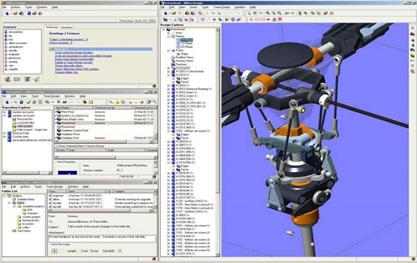
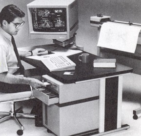
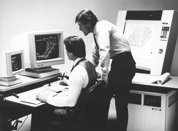
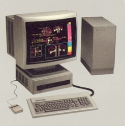
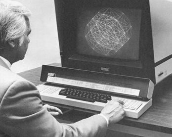
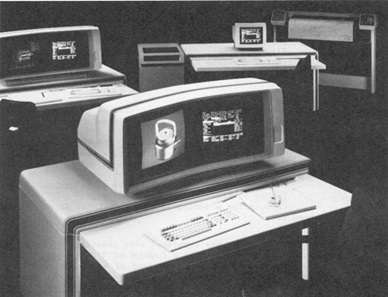
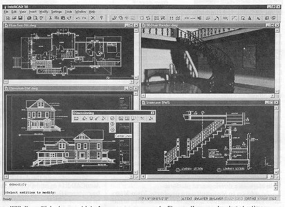

第21章：其他公司
由于空间限制，我无法在本书中详细介绍参与计算机辅助设计行业早期阶段的每个公司，也无法涵盖主要汽车和航空公司内部开发的众多系统。读者只能满足于本章中的简要描述，即使如此，我也只能涵盖我认为影响最大的公司。曾经推广过工程设计软件的公司数以百计甚至千计。本章所描述的一些公司仅提供软件，而其他公司则提供硬件和软件。虽然许多公司已更改名称，但我决定按字母顺序列出它们，基于它们最为人所知的名称以及早期和后续的名称更改。
Adra系统（Matrix One）
Adra系统于1983年7月在马萨诸塞州洛厄尔成立，创始人包括William Mason，在Applicon工作了10年，直至成为运营副总裁；James Stenzel，在Hastech，Inc.任工程副总裁；Peter Stoupas，在Adage担任区域销售经理，也曾在Applicon工作。 Mason担任总裁兼首席执行官，Stenzel担任产品开发副总裁，Stoupas担任市场副总裁。在1983年至1986年期间，该公司从多家公司筹集了1160万美元的风险投资，其中包括为DEC提供了最初资金的American Research & Development公司。
Adra最初的产品是在1985年1月推出的，它是一个由硬件和软件组成的CADAM兼容系统，由Adage公司作为CADStation 2/50进行销售。当时，Adage是IBM以外最重要的图形终端制造商之一，主要供应IBM销售的主机CADAM软件的支持。软件组件名为Cadra-1，模拟了CADAM的外观和操作方式，可以从主机数据库中提取图纸，对其进行编辑处理，然后重新保存到主机。
CADAM公司对这一产品的推出并不满意，因为它直接竞争了CADAM的销售。于是1987年起，CADAM公司对Adage和Adra提起了诉讼，最终庭外和解。CADAM公司收到了一笔金额“超过一百万美元”的赔偿金，Adage同意一旦库存清空，就不再销售CADStation 2/50。
该公司在1985年11月推出了Adra 1000系统，它与CADStation 2/50十分相似，拥有一个主频为10MHz的Motorola 68010微处理器，2.5MB的主存储器，UNIX操作系统，自定义图形处理器和一个19英寸1024×1024的单色或彩色显示器。该系统没有提供本地硬盘，但图形性能，尤其是平移和缩放操作，非常快捷。与早期系统的主要区别在于，Adra 1000与其Cadra-2软件被设计为一个独立的二维绘图系统。基本系统的初始价格为15,750美元。
一年后，Adra系统推出了Adra 3000，它与1000系统类似，但使用了Motorola 68020微处理器，性能更高的图形加速器，更好的通信能力和可选的20MB磁盘驱动器。通过公司的Cadra-2软件，Adra 3000可以用作CADAM系统的附属系统或低成本替代品。这些系统的起价为14,750美元（单色）和18,750美元（彩色），同时Adra 1000的价格降至11,750美元。
1988 年 8 月，Adra 推出了一款名为 Acclaim 的基于 PC 的系统。其主要元素是一个外部协处理器，包括公司的比特切片图形处理器和 4MB 的内存。Cadra 软件实际上在这个协处理器中运行，插入 PC 的并口之一。软件和协处理器售价为 10,795 美元，而包括一个 16MHz 的 386 PC 和 19英寸显示器的完整系统售价为 21,190 美元。
最终，Adra 推出了硬件业务，专注于 Cadra 软件。公司定位自己为提供低成本的替代品，替代大型企业级系统，比如 Computervision、IBM Applicon 等。公司强调 Cadra 的易用性和用户使用名为 “Autogeometry” 的编程工具自定义软件的能力。这个后置软件也用于将 Cadra 接口化到 CADAM 以外的系统上。PC 和 UNIX 工作站都受到支持。
到 1996 年，公司在 1,500 到 1,600 个客户中安装了约 17,000 个软件副本。Adra 在这个时候提供了许多不同的软件包。Cadra Design Drafting 是公司的旗舰产品。售价为 3,995 美元，它不再是简单的 CADAM 克隆。Adra 添加了许多自己的概念，包括智能标注、变体编辑、参数编辑、无限制绘图尺寸（这是 CADAM 的主要限制之一）、展示多达 200 个视图和许可证管理，允许在本地网络共享软件副本。
该软件可在大多数 UNIX 平台和 Windows 上使用。为了让现有用户更轻松地过渡到 Windows，公司将旧用户界面保留在软件中，用户可以选择 Windows 范例或旧界面。
Adra还开发了基于Ricoh Corporation的DesignBase几何核心的实体建模软件包Cadra Solids。这是一个混合建模器，允许用户混合使用线框、曲面和实体几何。虽然其他低成本软件包倾向于使用面形的三角网格曲面几何，但Cadra Solids使用了精确的B-REP技术。通过单击鼠标并将其拖动到新位置来编辑模型。用户还可以通过编辑其历史树直接修改模型。最初，Cadra Solids只在UNIX工作站上提供，售价为5995美元，与基本Cadra软件的UNIX版本价格相同。两个软件包合起来售价10995美元。几年后，这个价格降到了6500美元，但仍然是当时SolidWorks售价的近两倍。Adra还提供NC软件以及用于电气控制和电力系统的软件包。
1992年，Adra在康涅狄格州谢尔顿建立了一个新的运营部门，以开发产品数据管理（PDM）软件。这个团队最初被称为“Looking Glass Project”，后来成为矩阵部门，由Joseph Pieto领导，他曾在联合技术的Sikorsky Division开发了一个文档管理软件包IGOR[2]。该公司将此软件作为PDM产品推出，名为Matrix。它使用了一个相对较新的面向对象数据库Objectivity DB，来自Objectivity，Inc.该系统具有令人印象深刻的功能，但与许多其他早期的面向对象系统一样，在扩展处理大量数据时会出现性能问题。
像Cadra一样，Matrix具有易于使用的用户界面，良好的文档路由功能，分布式数据库消除了需要集中式服务器的需求，以及管理各种文档的能力。Mark O’Connell于1995年担任Adra的营销副总裁。他此前曾在数字设备公司担任一系列财务和市场管理职务。 O’Connell于1996年成为Adra的总裁，并于1997年担任首席执行官。
几年后，尾部开始主导整个公司。在1996年的一次采访中，Mason表示，Matrix所占公司业务的比例从1995年的15％增至1996年的33％，并将在1997年达到50％。最终，他认为它将成为Adra业务的80％。[3]在1998年5月，Adra将Adra Systems的设计和制造软件部分以1140万美元的价格出售给SofTech时，实际上它成为了100％。当时，Cadra产品线的年收入约为1500万美元，而Matrix则负责2100万美元。
公司利用这些资金推动其PDM业务向高速发展，将其更名为MatrixOne，产品变成了eMatrix以反映其互联网焦点。在2000财年（公司财年截至7月1日）销售额增至近7500万美元，并于2000年3月6日上市，以每股25美元的价格出售620万股。几乎立即，价格超过了70美元。
次年营收几乎翻了一番，达到1.45亿美元，利润为880万美元，这是公司的巅峰年。在接下来的几年中，收入下降至2003年和2004年的1.09亿美元，公司遭受了重大损失，直到2004年末才重新进入盈利状态。到2002年10月，公司股票已经失去了先前高点超过95%的价值，之后几年仅略有改善。2006年3月2日，达索系统宣布以每股7.25美元（约4.08亿美元）或约3.3倍收入的价格收购MatrixOne。收购在2006年5月11日完成，MatrixOne成为ENOVIA MatrixOne。
Alibre
Alibre是由J. Paul Grayson和Stephen Emmons于1997年在德克萨斯州理查德森市创立的公司。公司最初名为Entity Systems，但在任何软件向公众展示之前就将其更名为Alibre。Grayson是Micrografx的创始人和前CEO，Micrografx是一家提供低成本PC图形软件（包括PC-Draw）的供应商。Emmons也曾在Micrografix工作，他是Micrografix Designer的主要开发人员。Grayson为Alibre提供了最初的资金，担任CEO，Emmons则担任首席技术官。在接下来的几年中，该公司筹集了超过1800万美元的风险投资。
公司成立的头两年集中在开发一种新的机械设计软件包，用户可以通过互联网获取。这种交付机制被称为“应用程序服务提供商”或ASP。用户可以通过他们的台式电脑或笔记本电脑上的Web浏览器访问软件。实际的应用程序软件驻留在由Alibre运营的服务器上。
该软件Alibre Design于1999年11月在芝加哥举行的M/TECH’99会议上首次公开展示。该软件使用了Spatial Technology的ACIS核心、DCube的约束管理器以及其他几个供应商的组件软件。Engineering Automation Report对这种通过互联网提供CAD软件的新概念相当热情，可能过于热情：
“就在你认为机械CAD行业的软件供应商比它能够理性支持的要多时，又出现了一个新的公司，带来了新的理念，让你意识到真的还有另一个供应商的空间……由于该软件在Alibre管理的服务器上运行，没有必要投资昂贵的电脑硬件。此外，如果设计师正在访问供应商，他或她可以从任何可用的电脑登录该服务。无需在本地加载设计软件。在未来的几年中，您可能可以在飞机上的座位上进行设计。……我们观察到的设计软件似乎与大多数其他中档解决方案的早期阶段相比。……我们有一种直觉，即这家公司将成为大公司。它受到了良好的资金支持，并且似乎已经对准确的策略做好了准备。包括此简报在内的许多电脑行业观察家认为ASPs是未来的潮流。”[4]
几个月后提供的“预览版”软件与在M/TECH上展示的软件稍有不同。除了上述纯ASP实现，该公司还提供了一种版本，其中模型创建和编辑软件移动到用户的桌面系统上，而ASP服务器用于存储和管理用户的数据。最初的性能相对较慢，可能是因为软件是用执行解释而不是编译模式编写的Java。该软件的功能不如大多数中档软件提供的可变半径倒角和自由形表面。在焦点的重大变化中，公司开始将其营销信息从纯机械设计转向设计协作。
阿里布尔设计1.0于2000年4月10日上线。它以每月每用户100美元的订阅方式提供，或以自助式方式提供，价格为5000美元，可使用六个月。公司几乎所有的销售和支持活动都是基于网站进行的。与此同时，公司的管理团队正在迅速发展。汤米·斯蒂尔曾经是Intergraph软件解决方案的总裁，担任COO，汤姆·科平斯基曾经与Autodesk和SolidWorks一起工作，担任销售副总裁，而格雷格·米利肯曾经在Knowledge Revolution之前与MSC.Software被收购之后，担任市场副总裁。斯蒂尔和科平斯基都没有长时间离开，但米利肯最终成为该公司的总裁兼首席执行官。
格雷森和公司是微软技术的坚定信仰者，阿里布尔是最早支持Windows 2000的应用程序之一。事实上，比尔·盖茨将其用作Windows 2000发布的演示工具。
Alibre发展成为四层产品：
- 基于Web浏览器的客户端，处理线框和阴影模型的显示和操作。
- 一个应用程序设计服务器，支持模型的创建和编辑以及图形生产。
- 一个数据库服务器，处理访问权限、版本控制和签入/签出。这经常被称为仓库服务器。
- 一个管理服务器将所有这些联系在一起。
基于浏览器的客户端与设计和数据管理服务器的分离使得客户端可以在本地运行，而设计和数据管理服务可以是本地或远程的。到了2000年10月，Alibre已经改变了其商业模式，提供了一个免费的18MB下载模型程序，并以订阅的形式收费提供协作服务。大约在同一时间，它发布了Alibre Design 2.0，解决了一些性能问题。
阿利布雷起步比预期慢。虽然数千潜在客户下载了免费试用软件，但截至2001年2月，仅有不到1000人注册了公司的订阅服务。那些使用它的人可能更加着迷于软件的协作能力，而不是其设计能力，其落后于SolidWorks等竞争包。大约在这个时候，微软和Sun微系统解决了他们对Java的争端，微软推出了一种新的编程语言C#作为未来的网络中心编程语言，并表示阿利布雷将在未来从Java转换为C#。
随着于2002年5月发布的阿利布雷设计4.0，该软件成为了基于Windows的应用程序，而不是基于浏览器。该软件可以脱机使用，也可以在Internet上的协作模式下使用。

该公司的业务模式再次改变，$100的每月订阅费被取消，改为$995的年度费用。随后，当4.0发布时提供的$495促销价格很快成为了新的价格点。同时，也提供基于用户数量的自托管许可证。然而到2002年，公司不再积极推销这种类型的业务。软件可以提供在CD-ROM上或作为25MB的下载。越来越多地，该公司强调其协作能力和与其他CAD系统数据协作的能力。
到2002年末，该公司的重点再次改变，Alibre开始将其软件推广为竞争中档软件的低成本替代品。增强版软件Alibre Design Professional于2003年4月发布，年度许可证价格为$995，而基本版软件价格增加到每年$695。
Alibre故事中较为有趣的一个方面是，俄罗斯程序员Roman Voznyuk直接窃取其软件的行为。Voznyuk在2003年企业重组期间被解雇后返回俄罗斯，并提供稍作修改的Alibre Design版本，名为RaceCAD Design Professional。Alibre在俄罗斯和美国法院提起诉讼，声称RaceCAD是直接从Alibre Design源代码创建的，并且RaceCAD还包括从Spatial、D-Cubed、OpenDWG Alliance等公司窃取的软件。同时也提出了刑事指控。
根据格雷森的说法：“如果我们把俄语版本交给他，他就主动‘和解’并停止英文版的行为。显然，他最终只能面临重罚款和可能的监禁。”[5]虽然这些诉讼从未得到解决，但RaceCAD只是逐渐退出了舞台。然后，2007年8月，沃兹尼克在试图从加拿大进入美国时被捕。
2004年2月，米利肯成为了总裁和CEO，而格雷森留任董事长。米利肯采取的第一个步骤之一是将公司产品的价格提高至每年795美元的Alibre Design、每年1,295美元的Alibre Design Professional和每年1,795美元更为扩展的版本的Alibre Design Expert。一个免费的简化版本Alibre Design Xpress在2004年中期推出。Xpress吸引了大量潜在用户来访问公司的网站，其中有相当数量的用户最终成为了Alibre Design的付费客户。
Alibre从未成为格雷森预期的亿美元企业，但它确实成为了一个盈利企业。它仍然是CAD行业发展的一个有趣章节。在本文撰写时，该公司的软件正在VAR和在线销售，而在线销售是该公司首选的销售和支持渠道。其董事会成员包括Jeremy Jaech（Visio的创始人）和Mike Maples（微软的前执行副总裁）等人。
Aries Technology (艾瑞斯科技)
1984年11月，Aries Technology 在马萨诸塞州洛厄尔市由Larry McArthur、Richard Miller和其他几位前Applicon和Computervision经理Gerald Christopher、Peter Pritchard、Dr. Jack Horgan、Arthur McCray和Jerry Sabath组建。McArthur是唯一一个之前没有为早期CAD供应商工作过的人。他曾担任Gould’s Measurement Systems Division的总裁和总经理。
McArthur是Aries的总裁兼首席执行官，Miller负责营销，Christopher负责财务，Pritchard负责销售，Horgan负责产品开发，McCray负责软件开发，Sabath负责硬件开发。在接下来的三年里，该公司筹集了2250万美元的风险资金，其中包括Eastech Limited Partners的投资，该公司的主要人物之一是Applicon的创始人兼前副总裁Fontaine Richardson。
该公司的目标是提供可在产品设计的概念阶段使用的软件。他们用来描述这个过程的术语是“预测工程”。成立两年后，Aries在底特律的AUTOFACT’86上推出了其第一个产品IBM PC AT版本的Aries ConceptStation。同时提供捆绑和不捆绑（AT1200）版本，起价为32800美元和49900美元。早期的ConceptStation系统需要一种由Aries构建的图形引擎，以实现在PC AT上合理的交互性能。
为了提供“开放系统”，Aries选择了Microsoft的Xenix Unix实现作为其PC操作系统。早期的Aries应用软件包括精确的实体建模器、运动学分析和有限元建模以及其他分析软件。设计规则处理器使工程师能够根据正在开发的产品自定义这个过程中最适用的设计步骤。几个月后，推出了ConceptStation的低成本版本AT1100，价格从21850美元起。
在接下来的几年里，牡羊座与其他软件公司建立了合作伙伴关系，包括斯旺森分析系统、机械动力公司、MacNeal-Schwendler 公司(MSC) 和 Autodesk。由于这些关系，牡羊座开始在其 ConceptStation 软件中包括 Swanson 的 ANSYS 和 MDI 的 ADAMS 等分析程序的子集。该公司还开始支持大多数常见的 UNIX 工作站以及基于 Intel 的个人电脑。随着硬件性能的提高，对自定义图形加速器的需求减少了，牡羊座停止制造其专有的图形引擎。
1989 年 8 月，牡羊座与福特汽车公司签署了一份协议，根据该协议，福特向该公司投资了 600 万美元，并同意购买未指定数量的牡羊座软件产品。这是一段重要关系，因为福特此前建立了一个重大技术项目，名为 Alpha Simultaneous Engineering。该组织由 Howard Crabb 博士领导，拥有 450 名员工，旨在开发可转移到公司其他部门的更好的产品和流程。他们的大部分努力集中在使用 ConceptStation 作为概念设计工具上，这可以帮助公司显著减少设计时间并创建更好的产品。
1991 年 11 月，牡羊座宣布将在 ConceptStation 中整合 ACIS 实体建模内核，以替代其专有的建模器。这证明是一项有问题的决定，因为 1991 年的 ACIS 还没有准备好用于实际应用。在当时，ConceptStation 包括约十多个软件模块，其中包括：
- ConceptSolids（基于 ACIS 的实体建模器）
- ConceptParametrics（参数化设计）
- ConceptFEM（有自动网格生成和后处理的有限元建模）
- ConceptFEA（ANSYS分析包的子集）
- ConceptCompose（绘图生产）
- ConceptDraw（绘图标注）。
1992年7月，Aries与MSC签署了一项重要的联合开发和营销协议。几个月后，米勒成为了Aries的执行副总裁和首席运营官。引入了一些新产品，使得Aries和MSC软件的联系比以前更加紧密。
接下来的大变化发生在1993年9月，Aries被MSC收购，并成为该公司的MSC/Aries分部。麦卡瑟搬到了洛杉矶，并担任MSC的首席运营官，米勒继续管理Aries分部。麦卡瑟在大约一年后离开了MSC，并在SGI担任机械行业市场总监一段时间。后来，他成为Saxonyx的总裁兼首席执行官，该公司开发了药品行业的信息管理软件。米勒在离开成为行业顾问前还呆了一年。
公司的计划是将MSC/Aries定位为MSC分析软件的图形前处理和后处理器。这个概念在大约一年后MSC收购了PDA Engineering之后发生了变化。PDA的PATRAN软件用于预处理和后处理有限元分析模型，比Aries软件更加成熟，安装基数也更大。因此，PATRAN成为更受推崇的软件包，而MSC/Aries则淡出了市场，尽管还有一些客户在六到八年后仍在使用。
Ashlar
Ashlar成立于1988年，由马丁·纽维尔博士创立，他此前曾参与创立另一家公司Cadlinc，并在英国剑桥的CAD中心和施乐帕罗奥多研究中心工作。在工业界，纽维尔博士被认为是图形用户界面领域的主要权威之一。其他曾在Cadlinc任职的管理人员包括格兰特·蒙西和丹·菲茨帕特里克。Ashlar的初创资金部分来自Hambrecht and Quist公司，这家公司对这个新创企业寄予了很高的期望。Hambrecht and Quist公司的负责人比尔·汉布莱特曾担任Ashlar的董事会成员多年。
公司的首个产品是Ashlar Vellum，主要因其用户界面而备受瞩目。纽维尔博士的初衷是创建一个设计软件包，使用户与软件的交互自然流畅。Vellum软件的焦点是一项名为“几何推理引擎”的专利技术。该软件是Vellum用户界面的基础，被称为“Drafting Assistant”。它利用一种名为“Smart Cursor”的技术来加快用户交互，推断用户可能想要进行的下一步操作。
最初的Vellum版本是在苹果Macintosh计算机上实现的，后来在上世纪90年代初，推出了Windows PC版本。然而，当时苹果拥有一个名为Claris的软件组，也售卖一个名为Claris CAD的二维绘图软件包，因此对协助推广Ashlar软件并不特别感兴趣。
第一个发布的Vellum版本只能处理二维设计。之后，在1992年初，推出了适用于Macintosh的Vellum 3D版本，并在同年推出了Windows版本。这个新软件很快成为公司的主要关注点。Vellum 3D将Drafting Assistant扩展到了Z维度，使用户能够在一个三维等距网格上创建图形。Ashlar还添加了一个图形跟踪球显示器，通过用图形光标旋转跟踪球，用户可以在三个轴的任意组合上旋转正在处理的模型。
软件在 1992 年早期存在的主要缺陷是缺乏任何曲面或实体几何功能。在竞争系统大多可以自动处理的情况下，隐藏的线条必须手动移除。此外，组装能力有限。Vellum 的二维版本售价 1,995 美元，而三维版本售价 2,495 美元。在前三年，Ashlar 出售了大约 5,000 份 Vellum。然后在 1993 年 8 月，苹果的 Claris 公司撤回了 Claris CAD 并推荐其客户购买低成本版本的 Vellum。这一举动为 Ashlar 带来了数千个新用户。
在公司早期，Newell 是公司的董事长和首席技术官，而日常运营则由公司的总裁兼首席执行官 Jack Hendren 处理。Hendren 曾在 CADAM 公司担任过职务，领导该公司的 EDA 业务部门。1994 年 11 月，前 CADAM 公司总裁 Frank Puhl 加入了 Ashlar 的董事会。
到了 1990 年代中期，Vellum 是一款备受尊敬的产品，但市场上并没有太多的市场占有率。一些用户（包括 Scaled Composites 的高级飞行器设计师 Burt Rutan）对该软件作为概念设计工具的能力非常热衷。Ashlar 简单地无法与 Autodesk 的营销实力相匹配，因此公司成为了该行业的一个利基玩家。
1996 年推出的 Vellum 3D 版本 3.0 将 Ashlar 带入了一个全新的设计工具领域，具备了 NURBS 曲面、着色、隐藏线条删除和与其他供应商提供的高端实体建模产品的接口功能。Ashlar 仍然是一家规模相当小的公司，其位于加利福尼亚州Sunnyvale的总部约有 20 名员工，另外在日本还有 12 名员工。在达拉斯的 CADSoft Solutions 还有三到四个人正在帮助开发基于 ACIS 的 Vellum Solids，该产品于1998年初发布，与 Vellum 3D 结合使用时售价为 4,995 美元。当时，该公司基本上由 Nathan（Nat）Natarajan领导，他于1993年从 Autodesk 加入了该公司。
1994年，Ashlar对结构动态研究公司（SDRC）和迪尔·格拉弗斯（Diehl Graphsoft）提起专利侵权诉讼。诉讼声称，它们各自产品中使用的图形用户界面侵犯了与几何推理引擎和交互式绘图系统技术相关的Ashlar持有的一对专利。Ashlar认为，SDRC的I-DEAS Master Series中的“动态导航器”和MiniCAD中的Diehl Graphsoft的“SmartCursor”滥用了其技术。Ashlar与其他一些公司进行了许可协议，以便使用这项技术。
尽管Ashlar反复上诉法院的裁决，但SDRC最终赢得了此案，原因是涉及的专利被判定无效，尽管案件拖延了多年。
2000年，Ashlar将其业务迁往德克萨斯州奥斯汀，并定期为Macintosh和Windows平台发布Vellum软件的新版本。罗伯特·布成为总裁，然后在2005年初，该公司被Vellum投资合伙人收购，该合伙人包括布和他的妻子朱莉。随之而来的是在乌克兰基辅的软件开发办事处的开幕。
虽然公司名称仍为Ashlar Corporation，但它倾向于在描述自己时使用Ashlar-Vellum一词。 Ashlar的产品包括用于二维绘图的Graphite（$995）和用于三维设计的Argon（$995）、Xenon（$2,995）和Cobalt（$3,995），其中后两者包括实体建模。Ashlar的许可协议允许用户在多台机器上安装软件（例如在工作中的PC和家庭中的苹果电脑上），只要同时只使用一种许可证即可。对于需要短时间使用软件的用户，公司提供年度和月度许可协议。
Automation Technology Products（CIMPLEX Corporation, Technology Answers）
ATP于1983年4月由Calma的前总裁兼首席执行官Robert Benders、Calma产品开发副总裁John Benbow和Calma首席财务官Lem Bishop共同创立。自1983年至1987年期间，该公司从投资者（包括Mayfield Fund、Arthur Rock和Hambrecht＆Quist）那里筹集了大量风险投资。Benders担任该公司的首席执行官，Benbow担任高级副总裁技术，Bishop担任副总裁财务和行政。
ATP的计划是开发一个基于参数实体建模的全面设计、分析和制造系统，最初运行于IBM主机上，使用该公司的VM操作系统和5080图形终端。该公司的软件也是第一个将特征化设计和制造概念结合在一起的产品之一。该公司与英格索尔铣床公司和LTV公司的沃特航天产品部门签署了技术合作协议。该软件产品名为CIMPLEX，由特征化实体建模、分析、制造和数据管理模块组成。CIMPLEX软件使用户能够使用三维阴影和边缘突出的实体模型以及线框图和隐藏线移除图像。
回顾过去，选择IBM主机作为软件的主要平台可能是一个致命的错误，因为UNIX工作站正开始在技术计算方面产生重大影响。当时，ATP被认为IBM计划推出一个VM工作站，就像Digital最终推出VMS工作站一样。在IBM，这从未发生过。 IBM主机决策进一步复杂化，因为前景推动公司将软件移植到MVS/XA操作系统。这被证明是一个重要任务，一度涉及公司三分之一的研发人员。选择PL/1作为编程语言也成为一个问题，就像在Applicon一样。
大部分而言，ATP 通过开发整个CIMPLEX软件套件而非授权外部组件。这可能是公司最终衰亡的另一个因素。开发实体建模，有限元建模，制造和数据交换软件会填满任何公司的板子。但为了支持这些应用程序，该公司还编写了自己的数据库程序，重写了IBM的磁盘处理例程，并创建了自己的VM和MVS命令语言。CIMPLEX是相当昂贵的软件。基本设计模块的大型机版本定价为100,000美元，而整个套件的价格为350,000美元[9]。
1984年，ICL公司的Ralph Ezard被Benbow招募来经营公司的咨询服务业务，之后Jay Orlando也作为副总裁加入了ATP，他之前在Computervision工作。1985年2月，原先在SDRC担任产品规划和市场总经理的Peter Marks作为产品规划和市场副总裁加入了ATP。1985年末，ATP首次销售给了Ingersoll，接下来几年的客户包括Northrop、Sikorsky Aircraft、Boeing和Chrysler Corporation。和之前的技术合作伙伴一样，这些公司也密切与ATP合作，定义和测试公司的软件。
1986年6月，Benders辞去了CEO一职，随后成为Megatek Corporation的总裁兼CEO，该公司是一家高性能图形终端设备的供应商，由联合技术公司拥有，曾经拥有Calma。几个月后，Benders被Gould Incorporated成像和图形部门总裁兼总经理的Dr. Russell Henke接替。Henke早前曾担任Applicon的执行副总裁，还担任过SDRC的总裁和COO。 （请参见第7章和第17章）。
公司面临的一项重要任务是将CIMPLEX软件移植到UNIX系统。完成这一任务分为两步。首先，对软件进行了修改，以支持Silicon Graphics工作站作为IBM 5080的替代品。SGI为其工作站系统提供了PL / 1编译器，使得ATP能够将完整套CIMPLEX软件移植到SGI工作站上本地运行。
1987年，Henke与Chrysler谈判，为ATP的10％利益筹集了500万美元的投资。然而，这显然太少太晚了。在之后的两年里，该公司继续挣扎，直到最终于1989年后期申请破产。到那时，投资者已经总共投入了近3600万美元，但投资回报却微不足道。破产程序的一个结果是，CIMPLEX软件的所有权被转移到了新公司CIMPLEX Corporation，该公司由摩根斯坦利投资了100万美元。新的CEO是CAD行业的新手Ted Sarbin。
未来15年，CIMPLEX自动制造软件的开发持续进行，尽管投资速度略有减缓。从1990年到1998年，该公司的总裁兼首席执行官是杰里·罗伯逊。至少在1996年之前，该软件被称为制造分析软件。CIMdata认为，该公司拥有一些领先的生成加工软件，但CIMPLEX似乎永远无法成为NC工业的重要因素。该公司还在彼得·艾瑟顿的指导下开发了一些有效的NC验证软件。
1998年，CIMPLEX技术被Technology Answers，Inc.收购，并将软件更名为Cimskil。Cimskil的当前版本允许用户导入CAD模型，并使用描述组织NC机器能力的数据，自动生成优化的工具路径。该软件通过识别模型特征，如槽，老板，袋等，并选择最佳的工具和加工方法来实现此目的。用户可以覆盖自动生成的任何工具路径的任何方面并插入他们自己的工具选择和程序。
《现代机床》2002年4月号的一篇文章描述了Cimskil用于编程五轴机床的一个项目，该项目之前曾在三轴和四轴机床上完成。结果令人印象深刻。使用Cimskil时，零件编程所需时间是普通NC零件编程的三分之一至十分之一，生产时间也是之前记录时间的一半或更少。大部分软件开发是根据美国国防部的合同完成的，其目的是希望能够快速生产飞机备件。
BruningCAD
布鲁宁是AM国际的一个部门，销售工程用品和复制设备。1981年4月，布鲁宁开始销售一种名为Easydraf2的低成本绘图系统，该系统基于从Graphcon授权的二维绘图软件。
一个完整的系统售价为69,500美元，包括一台带有13英寸光栅显示器的惠普9845B台式电脑。随后，这些电脑被带有9英寸或12英寸彩色显示器的惠普9000系列电脑所取代。
Graphcon于1977年由Livingston Daniels在俄克拉荷马州的塔尔萨成立。其Easydraf软件在Tektronix 4050图形系统以及惠普9800系列上都可用。 AM International于1983年7月收购了Graphcon，Daniels成为更名为BruningCAD的总裁兼首席执行官。在1983年9月，曾在Tektronix和Intergraph任职的Lou Epstein加入公司，担任销售和市场副总裁。

在接下来的几年里，BruningCAD 开发了自己的工作站，使用 Motorola 68000 微处理器、19 英寸 16 色 1024×768 显示器和 14.5MB 硬盘。推出了两个软件版本，Easydraf2 Architectural 和 Easydraf2 Mechanical。起价为 $41,900，比相似的基于 PC 的系统高得多。
1984 年 10 月，正在破产的 AM International 将 BruningCAD 并入其余的 Bruning 组织中，以降低开支。一年后，公司的 CAD 相关员工从 46 人减少到只有 15 人，这项业务的残余则出售给 El Paso, Texas 的 Holguin Corporation。当时全球可能有 1,500 台 Easydraf2 系统，其中 900 台在美国。Mutoh Industry Ltd. 获得了该软件的日本使用权。尽管 Holguin 一段时间内保留了 Tulsa 的工作人员，但该业务最终消失了。
Cadkey (Micro Control Systems，Baystate，Kubotek)
该公司成立于1981年，位于康涅狄格州温莎，是由利文斯顿·戴维斯和彼得·史密斯创立的Micro Control Systems。它的第一个产品是一个三维数字化仪器叫做Perceptor。接着推出了一个类似的设备叫做Space Tablet。1982年，该公司推出了一个简单的软件包，使用户可以将扫描数据查看为三维等距或透视图像。该软件可以在Apple II和IBM兼容的PC上运行，名为Space Graphics，价格仅为475美元。
该公司于1985年推出了PC / DOS程序CADKEY，部分是为了利用其三维扫描仪生成的数据。它针对机械设计师，尤其是那些正在创建涉及NC制造操作但也对生产高质量机械图纸感兴趣的人。 CADKEY在PC CAD市场的份额在20世纪80年代晚期达到了约14％，略逊于AutoCAD和VersaCAD。CADKEY是一个功能丰富的三维线框设计和草图绘制软件包。许多客户，包括波音公司，购买它来补充他们也使用的高端设计系统。
到1992年，该公司每年的销售额约为1200万美元，利文斯顿·戴维斯聘请了马尔科姆·戴维斯，他最近离开了Autodesk，担任总裁。利文斯顿·戴维斯和彼得·史密斯离开了公司的日常管理角色，但他们仍然是公司的董事会成员。为了推动业务势头，该公司将CADKEY软件的定价从3500美元降至495美元，将DataCAD（它几年前收购的一个建筑草图绘制软件包）的价格从2000美元降至150美元。这大大增加了用户数量。例如，DataCAD用户群不到12个月就从几千人增加到了50,000人以上。
到1994年末，市场不如预期的那样价格弹性，并且总收入没有增长，显然出现了这种情况。 Malcolm Davies离开，Livingston Davies回归为总裁，CADKEY的价格上涨到795美元。 1995年初，Cadkey推出了CADKEY for Windows，并在年底前发货了25,000份抄本。
该公司还将几个第三方软件包作为其产品线的一部分进行营销，其中包括FastSURF，由同名公司开发的机械绘图符号库DRAFT-PAK，以及该公司的经销商之一Baystate Technologies开发的。 在1995年末，该公司还在开发ADVANCED MODELER，这是一款使用XOX Corporation的Shapes几何核的实体建模程序。 在1996年初，该公司进行了大规模的撤退并转向软件出版业务模式，CADKEY开发被转移到印度。 Baystate被签约为CADKEY的主要分销商。
1996年中旬，位于马尔伯勒的Baystate，由Robert Bean领导，收购了CADKEY软件包和相关的Cadkey软件产品的全部权利。 当时，大约有200,000份CADKEY在使用中。 Bean采取的第一步是用来自Spatial Technologies的ACIS替换XOX几何核。 1997年3月，Baystate开始销售集成了ACIS 2.1实体建模的CADKEY 97。 现在的价格是1995美元，比几年前大幅上涨，但仍然是像SolidWorks或Autodesk Mechanical Desktop等竞争系统的一半。
一年后，Baystate从FastSURF公司和Advancing Geometrics组成的合资企业中收购了FastSolid和FastSURF。 CADKEY，Draft-Pak，FastSolid和FastSURF的组合以3995美元的价格销售为CADKEY DESIGN SUITE，而基础包仍为1995美元。 Baystate后来在1998年更名为CADKEY Corporation。
使用CADKEY 99，公司拥有了一个合理的建模解决方案，虽然它仍未整合参数定义，也不容易进行装配建模。由于CADKEY 99没有包含描述模型构建方式的历史树，该程序的建模能力相当迅速。缺点是它增加了修改模型所需的努力。CADKEY还在1999年底开始使用Web作为销售工具。在2001年12月，该公司宣布了一个完全重新设计的CADKEY GraphX Version 20套装，融合了面向对象软件技术、HOOPS图形例程和ACIS 6.3.6。尽管其产品不断改进，但该公司在2003年遇到了一大难题。
1991年，Baystate曾被CADKEY附加软件的另一供应商Harold L. Bowers（作为HLB Technologies运营）起诉，指控Baystate复制了它的一个软件产品。这个案件拖了12年，但最终在2003年裁决为HLB获胜。Baystate需要支付HLB 527万美元（387万美元加上利息），而Baystate并没有这笔钱。2003年8月，Baystate申请破产。最初，人们认为TurboCAD的供应商国际微电脑软件公司（IMSI）将收购该公司。2003年11月，曾于1996年收购Baystate 17%股份的日本公司Kubotek以360万美元购买了该公司。HLB因此交易获得约75万美元。该公司更名为Kubotek USA，纳尾武尊担任总裁，Bean担任首席运营官。CADKEY产品本身更名为KeyCreator。
CalComp Systems（ISICAD）
CalComp计算机产品是由洛克威尔公司的三名工程师于1959年创立的。最初专注于军事研究，该公司于1961年推出了行业中首个增量数字绘图仪。到了20世纪70年代初期，它已成为数字绘图仪的领先制造商，并扩展到其他领域，包括IBM主机计算机的插接兼容外围设备。后者涉及收购世纪数据系统，是一场超出本书范围的财务灾难。
数据存储业务于1979年被出售给施乐公司，而公司本身则于1980年被桑德斯联合公司收购。除了自己的图形终端产品线外，桑德斯还在20世纪80年代初期和中期为IBM制造了3250显示器。当IBM推出5080光栅图形系统时，这一业务最终消失了。公司绝大部分的绘图仪销售是支持其他公司的CAD系统。桑德斯将下面描述的CalComp Systems业务、CalComp绘图仪业务、其已收购的Talos数字化仪业务以及其自身的图形终端业务组合成一个单一组织，并将所有这些产品都营销为CalComp品牌。
CalComp于1975年开始开发自己的CAD系统。该公司的第一个CAD产品IGS-500于1979年推出，大约与CalComp Systems成立的时间相同。IGS产品系列还包括IGS-300和IGS-400。这些系统是基于法国电子公司Société Européenne de Mini-Informatique et de Systèmes（SEMS）的一款16位小型计算机进行许可生产的。每个终端都内置了一个名为Picture Processor的高速图形处理器，可在本地处理诸如平移和缩放等操作。每个终端都包含一个250KB高速存储器，可以容纳整个活动绘图。基本单元有一个15英寸的监视器，分辨率为416 x 300。也可提供1024 x 768分辨率的20英寸单元。
基本的IGS-300旨在升级为IGS-500系统。它拥有192KB内存，40MB磁盘，15英寸低分辨率图形显示屏以及一个独立的字符显示屏。IGS-400则增加了一个硬盘驱动器，双软盘驱动器并支持一个或两个终端。IGS-500是一种更强大的系统，能够支持六个或更多的本地终端或远程IGS-300系统。还提供了高分辨率20英寸显示屏。基本系统价格从90,000美元到160,000美元不等，而每个额外的终端则需要花费55,000美元（带较小的显示屏）。彩色光栅显示器在1982年中期推出，售价为78,000美元。
IGS软件在二维绘图方面表现良好。一个问题是该计算机通常不对其他商业用户开放的，因此CalComp必须创建自己的操作系统以及FORTRAN编译器。另一个问题是公司提供的特定任务应用程序很少，除了建筑绘图和管道与仪表图（P＆ID）之外。
1984年中期，CalComp Systems推出了一款新的产品线：System 25。它基于Masscomp计算机和CalComp开发的Picture Processor。最初的Masscomp系统使用双10 MHz的Motorola 68000微处理器、UNIX和以太网。典型的配置包括一个字符显示屏，一个20MB的硬盘和一个20英寸单色或19英寸彩色显示屏。该软件支持基本的绘图功能，重点是设施规划和建筑设计。

System 25 软件与早期的IGS软件在功能上完全相同。每台Masscomp计算机可支持两个工作站。一套包含一个单色终端和一个CalComp 945 绘图仪的系统的售价为95,000美元。第二个工作站售价为37,000美元。
1985年中期的管理人员包括：
- William Conlin - CalComp Computer产品总裁
- Louis DeBartolo - CalComp Systems副总裁兼总经理
- William O’Brien - Group副总裁，市场和销售
- Jim Gowan - 国际副总裁兼总经理
- Doyle Cavin - 技术副总裁
- Joe Fornataro - 系统销售副总裁
- Warren Winterbottom - OEM 产品销售副总裁（之前是系统部门的营销副总裁）
- Conlin 退休后加入 SDRC 董事会。O’Brien、Gowan 和 Cavin 均为前泰克电子高管，而 Winterbottom 则先后为 Intergraph 和 Bentley Systems 工作。
CalComp Systems的年收入大约只有3000万美元左右。1985年中期，CalComp Systems Division以750万美元收购了Personal CAD Systems (P-CAD)的CADplan软件产品线，并将其改名为CADVANCE。该软件最初售价为每份2500美元。但收购并不顺利，Sanders以金22百万向P-CAD提出诉讼，声称该公司在收购前误导了其关于其AEC业务的财务状况。CalComp面临的一个主要问题是，它与一些大型绘图仪等外围设备制造商进行竞争。1986年，Lockheed收购了Sanders Associates，同时也收购了CADAM公司。当Lockheed遇到财务问题时，它出售了包括CADAM在内的几个部门。CalComp在这段时间内作为Lockheed的一个独立部门，专注于绘图仪和其他外围设备，在接下来的几年里表现不错。
1987年5月，CalComp将CalComp Systems出售给总部位于德国埃尔旺根的ISICAD，退出了CAD系统业务，随后将资源集中于三大主要产品线：绘图仪、打印机和数字化仪。ISICAD在加州安纳海姆开设了一个办事处，推广CADVANCE多年。美国分部的总裁是约翰·阿诺德。CalComp继续生产各种类型的绘图仪，使用几乎每种目前可用的技术，包括越来越流行的喷墨机，逐渐取代了钢笔绘图仪和昂贵的静电设备。
1996年7月，CalComp Computer Products和Summagraphics合并成为CalComp Technology，Inc。这个新实体取代了Summagraphics在纳斯达克的位置，Lockheed Martin拥有新公司的约90％的股份。接下来的几年中，CalComp Technology的销售逐渐下降，公司纠结于新的喷墨技术和惠普公司日益增多的绘图仪竞争。CalComp Technology的股票交易于1999年1月终止，公司在1999年5月被清算。
CADVANCE软件是1995年由位于加利福尼亚州阿纳海姆的软件经销商Furukawa Information Technology, Inc.从ISICAD收购的。该公司由Takashi Furukawa创办，目前仍在销售CADVANCE，每份售价$1,995。请参见下面关于ISICAD的部分。
Cimlinc（Cadlinc）
Cadlinc成立于1981年4月，由John West和此前参与NC供应销售的Mike Sterling创立。Mike Sterling还是一家成立于1973年的制造咨询公司Systems Associates的创始人。该公司是一款NC软件包Graphical Numerical Control（GNC）和一个曲面几何包Polysurf的美国分销商，这两个软件都是由英国剑桥的CAD Centre开发的。GNC软件也被Prime Computer销售。在创立Cadlinc的过程中，Systems Associates并入了新公司。West主要是公司的公众形象，而Sterling成为了新公司的产品开发副总裁。
该初创团队的第三位关键成员是Martin Newell博士，他此前曾在剑桥的CAD Centre工作，然后在施乐帕洛阿尔托研究中心（PARC）与John Warnock一起开发交互式图形系统，后者随后共同创立了Adobe Systems。虽然Cadlinc最初的总部设在伊尔克格罗夫，伊利诺伊州，但Newell留在帕洛阿尔托，在那里运营了公司的研究中心，而Sterling则在密歇根特洛伊经营其他软件开发。最终，该公司的运营被合并到伊塔斯卡，伊利诺伊州。
在四轮融资中，该公司从多家投资公司，包括凯鹏华盈和希曼集团，获得了2400万美元的风险投资。该公司早期产品分为三类。最初，它制造了围绕Motorola 68000微处理器、以太网和专有图形处理器构建的自己的UNIX工作站。它还开发了设计和绘图软件，并使GNC NC软件适用于Cadlinc工作站。它可能可以声称是第一个出售网络化UNIX工作站上的交钥匙CAD/CAM系统的供应商，因为被Auto-trol Technology和Calma使用的Apollo工作站并不是真正的UNIX系统。
据Sterling称，他认识Silicon Graphics的创始人Jim Clark，并试图让Cadlinc的金融支持者资助Clark早期的图形工作，但未能成功。这是Auto-trol在第9章中讨论过的6个月后。
在20世纪80年代的整个时期，当其他交钥匙供应商如Calma、Computervision和Auto-trol Technology转向由Apollo Computer、Sun Microsystems和其他公司制造的行业标准工作站时，Cadlinc在其专有工作站上投入了相当大的资源。尽管它的工作站和用户界面对其自有软件进行了优化，但是制造计算机硬件，包括专有浮点处理器，最终对公司产生了负面影响。Cadlinc似乎一直在追赶其他工作站供应商。例如，在Apollo切换到Motorola的68020微处理器后的一段时间内，Cadlinc仍在使用68000。
该公司的系统价格合理。1985年中期，CIM Station（一个带有2.5MB内存、30MB磁盘和19英寸256色监视器的基本工作站）售价39500美元。基本设计软件另加10500美元，而曲面设计和NC软件包则各为9500美元。可以假设打包解决方案的售价低于这些价格之和。该公司还销售CIM Manager，一个具有多达800MB磁盘存储的服务器。几乎没有第三方软件可用。
公司最強的營銷亮點在於West和Sterling已參與NC業務超過十年了，而軟件的用戶界面當時是市場上最好的之一。West是一個非常有活力的人，公司獲得了大量的正面新聞報導。1985年11月，公司改名為Cimlinc。次年，公司的收入達到2500萬美元，擁有200多名員工，每個人都預計公司將走向公眾市場。盡管公司的收入隨後增加到超過3500萬美元（大約一半是硬件，一半是軟件），但IPO從未發生。
1986年，公司將系統命名為Power CIM。新工作站使用68020處理器，摩托羅拉68881浮點處理器以及一個單獨的68000來控制輸入/輸出。該系統具有4MB的內存，86MB的磁盤（可擴展到2GB）和一個19英寸1024×792的彩色顯示器。這是其中一個第一個主要由屏幕菜單和滑鼠組成的系統。該軟件更名為CIM CAD，包括實體建模功能。製造軟件被稱為CIM CAM。單色工作站起價$11990，彩色工作站起價$16990。CIM CAD軟件售價$4495，CIM CAM售價$6495。

到了1987年底，该公司意识到无法再在工作站市场中竞争，Cimlinc成为了一个纯软件供应商。个人电脑正在崛起，销售团队发现自己花费了相当大的一部分时间来维护公司的硬件策略。Cinlinc将其软件移植到Sun Microsystems SPARCstation上，并在1989年中期将其软件价格降低了高达77％。一个具备基本CAD软件的Sun工作站只售19500美元。
1990年，该公司一分为二，AMT（先进制造技术）部门继续维护其CAD / CAM应用程序，而一个新团队开始追求信息管理应用程序。设计和NC包被更名为ExpertCAD，ExpertCAM和ExpertCAD 3D，价格从2995美元到8995美元不等。该软件在Sun UNIX工作站和Windows PC上提供支持。AMT还提供了更先进的UNIX软件解决方案ToolDesigner，用于工具和模具生产，最初的价格为10000美元。
逐渐地，Cimlinc开始将其精力重新聚焦于数据管理领域。其目标是使用名为LINKAGE的产品管理设计和制造信息流程，该产品于1991年推出。此软件围绕着在其CAD / CAM软件中使用的宏语言ScriptLINK构建。LINKAGE在UNIX工作站上运行，但此时应该将其移植到个人电脑上。Mike Sterling由于公司方向的变化于1995年左右离开了该公司。
Cimlinc旗下的AMT部门于1997年底以600万美元的价格被Softech收购，目前仍在运营。除了其他产品外，Softech还是CADRA的现供应商。到2001年，Cimlinc的数据管理部门已经消失了。
CoCreate（惠普机械设计部门）
惠普是小型计算机和桌面图形系统的早期供应商，用于工程设计和分析，或者作为各种系统供应商的供应商，或者直接向最终用户销售此设备。桌面计算机系统的两个活动中心分别是科罗拉多州福特科林斯和德国博布林根。
从应用程序的角度来看，科林斯福特集中于电子设计和绘图，特别是电子原理图。惠普花费了大量精力试图在内部开发电子CAE软件。该努力由随后离开成为Valid Logic首席执行官的C. Richard Moore领导，在1984年10月被终止。然后，惠普于1985年底以3250万美元收购了位于犹他州盐湖城的Cericor。到1990年，这个操作实现无法与像Mentor Graphics这样的公司竞争，EDA业务被关闭。
分别地，惠普在博布林根设施开始开发机械软件。1980年推出的第一个产品是一个名叫HP Design的面向对象二维包。它使用了参数化技术，但被证明难以使用。虽然他们从英国的软件公司和德国的另一家供应商添加了FEA包和NC包，但HP Design在HP之外并不广泛使用。该包专注于设计任务，而当时客户正在寻找桌面绘图解决方案。该软件中参数化特性存在问题，导致它避免了基于历史的软件解决方案的开发路径。
1981年底，惠普推出了一个新产品HP Draft。这是一个设计包，公司从南非软件公司Skok Systems获得许可。HP许可该软件包用于机械用户的转售，而Skok继续向AEC用户销售。由Tillman Schad领导的惠普博布林根开发团队从1981年到1984年之间开发了一个新的专为机械绘图而设计的软件包，名为ME Series 10。
同时，惠普将该业务重组为机械设计部(MDD)。除了ME 10，MDD还开发了一个使用Romulus实体建模器的三维设计包。1985年推出的ME Series 30主要是一个分析建模器，没有自由曲面功能。在美国的价格是14,500美元。
为了满足对三维曲面建模的需求，惠普在1985年末推出了ME Series 50。这个软件包基于Graftek(当时是Burroughs的一个部门)的软件。但不幸的是，惠普的收益一直在下降，ME 50因成本节约措施在推出9个月后被撤出市场。
一般的ME 10系统售价约为40,000美元，包括一台惠普工作站。当时，MDD和电子CAE系统都由惠普的设计系统组管理，该组还负责公司的工程工作站业务。公司还销售了一个名为ME Series 5的功能较少的版本，售价约为20,000美元，包括硬件。后者并不特别成功，因为PC-based解决方案的兴趣越来越高，比如Autodesk的AutoCAD，其价格包括硬件和软件不到一半。
设计系统组由比尔·帕齐波克（Bill Parzybok）管理，电子工程活动由拉里·波特（Larry Porter）管理，而在博布林根的机械工程操作则由蒂尔曼·夏德（Tilman Schad）管理。与此同时，惠普成为了工程图绘仪业务的主要参与者，并收购了阿波罗计算机，显著增加了其工程工作站市场份额。
公司进入CAD软件市场，使其与许多阿波罗的原始设备制造商竞争，这些客户并不特别愿意与他们的主要供应商之一竞争。惠普试图通过为其CAD系统建立单独的销售团队来减轻反对意见，但效果不佳。
1992年初，惠普将现有产品更名为精密工程/ME 10和精密工程/ME 30。与此同时，它推出了一套基于实体的系统，名为精密工程/SolidDesigner。该软件包最初基于Spatial Technology的ACIS几何核心。当时，惠普在Spatial技术上拥有约10%的利益。作为早期采用者，惠普不得不开发大量的ACIS附加技术，特别是在曲面建模领域。惠普在自己的开发路径上前进，从未实现ACIS的更新版本。在几个版本之内，SolidDesigner中几乎没有原始的ACIS代码。
SolidDesigner与大多数当代CAD系统不同，后者使用历史树来维护图形特征之间的关系。它采用一种称为“动态建模”的方法，允许用户操纵几何形状，无论先前对模型做了什么。两种方法都有优缺点 - 足以说明HP的方法与市场上大多数其他系统不同。SolidDesigner保留了ME 30的许多功能特性，但不再支持平板菜单。多鼠标控制器用于在HP工作站上平移，缩放和旋转带明暗的模型。详细的机械制图仍然使用ME 10完成。Solid Designer软件价格从7,500美元起，与PTC的Pro/ ENGINEER竞争。
此外，该公司推出了一个名为WorkManager的PDM软件包，它是一个升级版的较早版本的数据管理系统。WorkManager被实施为与HP出售的设计和制图系统以外的数据一起使用的解决方案。目的是提供一种不需要专用系统管理员的数据管理解决方案。
HP与其机械CAD市场的OEM客户之间的摩擦最终导致HP在1996年将MMD重组为一个名为CoCreate的独立全资子公司，由Schad担任总裁。 2000年9月，CoCreate被两家欧洲投资公司3i PLC和Triton Fund以及公司的员工收购。两家投资公司可能拥有公司超过90％的股份。 Schad继续担任新独立公司的首席执行官，该公司仍位于科罗拉多州福特·科林斯。该公司的首席运营官是Gert Deiss，产品开发副总裁是Ulrich Mahle，他们都是长期任职于HP和CoCreate的员工。
在20世纪90年代末，CoCreate开始推广一个新的协作工程软件包，称为OneSpace，它使位于地理不同地区的工程师和其他人员能够共同在同一设计上工作。一个参与者控制设计审查会议，而其他参与者查看对产品模型所做的任何更改。此控制权可以在参与者之间转移，尽管只有实际在计算机上使用设计软件的人可以进行更改。最终，Solid Designer被改名为Designer Modeling，ME 10变成Designer Drafting，而WorkManager则变成了Model Manager。到2006年，该软件正在使用Microsoft的.NET平台进行全面开发，并不再保留其UNIX根源的任何残留。
2002年3月，Schad被William Gascoigne替换为CEO，后者曾担任Applicon的全球市场副总裁，后成为SDRC的全球运营执行副总裁。Hansjoerg Pleggemars在2000年加入该公司，担任CFO，后于2006年7月被任命为COO。同时，随着HBK Investments L.P.（一家美国大型对冲基金）收购CoCreate，该公司的所有权再次发生了变化。
2000年至2006年，CoCreate的年收入约为7500万美元，尽管该期间利润有了显著提高，但其收入的停滞原因是公司开始提供按月订阅的软件许可证，除了销售完全付清的许可证之外。该公司的总部基本上分别位于Fort Collins和德国Sindelfingen，约300名员工在欧洲、美国和亚洲均匀分布。
2007年12月，PTC以约2.5亿美元的价格收购了CoCreate，承诺将继续支持CoCreate的软件作为独立产品，并将其技术与自己的产品集成。 在最新的收购时，CoCreate拥有约5000个客户。
Cognition
除了它表现出的令人印象深刻的稳定性和CAD行业的一些早期先驱人物运营之外，我可能不会在本章中包括“认知”公司。认知公司成立于1985年2月，由一群11位经验丰富的行业经理人领导，其中包括Computervision和制造机器人和人工视觉系统的Automatix的创始人之一Philippe Villers。Villers在1980年与Mike Cronin一起开始了Automatix，后者曾担任Computervision的销售副总裁，后来又担任研发副总裁。1984年，Automatix的投资者感到需要换届管理，Cronin取代Villars担任公司的CEO。
Villars成为一名连续企业家，致力于开发和市场推广机械计算机辅助工程（MCAE）解决方案。其他创始人包括George Stienke，市场副总裁，曾是Intergraph的市场执行副总裁; Kenneth Schroeder，研发副总裁，曾是通用电气工业电子开发实验室的经理; Robert Light，MCAE产品线经理，曾是麻省理工学院CAD实验室的技术经理; Douglas Wilson，系统架构经理，曾是麻省理工学院项目阿泰纳的经理，该项目是一个拥有1000个终端计算机网络。其他创始人和早期员工的背景同样强大。
基于Villers在金融界的声誉，公司在成立的头两年内成功筹集了两轮总共1550万美元的资金，其中包括创始人的200万美元。可以假定后者中的很大一部分来自Villers。投资者包括哈佛管理公司、麻省理工学院和Eastech有限合伙公司。如上所述，Eastech也是Aries Technology的早期支持者之一。
公司的初始产品，Mechanical Advantage 1000（MA1000）于1985年11月在底特律的AUTOFACT’85展览会上推出。公司计划提供解除绑定软件和完整的交钥匙系统，包括一个Digital MicroVAX II主机和最多五个IBM PC AT工作站。该软件使用户能够草绘、分析和优化概念设计。目的是通过IGES将这些数据传输到传统的CAD系统，以完成设计并生成工程图纸。
MA1000软件被称为优化器。它包括SketchPad、MathSolve、一阶分析工具、在线工程手册和一个叫做智能笔记本的数据管理工具。MathSolve方程可以链接到以SketchPad定义的特定尺寸。工程手册的内容源于公司与麦格劳希尔的协议。一个三座MA1000的价格为130,000美元。拆分的Optimizer软件价格为37,500美元。
经过一些开发延迟，公司在1986年末开始出货MA1000系统。1986年的收入仅为73万美元，而在95名员工的支持下，公司正在快速消耗资金。一款性能更高的系统，MA1500/GPX，采用数字VAXstation II/GPX在1986年末推出。虽然这些系统表现得非常好，但它们似乎没有引起潜在买家的足够兴趣，这些买家大多仍在尝试自动化基本的制图任务。
最初的期望是Cognition会像火箭一样起飞。但这从来没有发生过。一个问题是技术吸引了个人工程师的注意，但控制预算的高级经理们仍然专注于自动化基本的设计和制图任务。George Stienke在1987年初辞职，公司开始寻找扩展产品的途径。其中一个重点是成本估算。随后推出的产品，成本和可制造性指南，最终成为公司作为一个可行的业务实体的关键部分。随着时间的推移，公司逐渐退出硬件业务，成为了一家纯粹的软件公司。
这一转变的一个方面是收购SuperCads，Inc.，一家由Shyamal Roy在1981年创立的软件公司。SuperCads软件是一个三维线框包。Cognition市场推广SuperCads，但没有取得太大的成功。
1988年初，公司陷入了严重的财务困境，Mike Cronin领导的Automatix收购了Cognition Inc.的资产，并聘请了这家公司大部分剩余的员工。Automatix把前Cognition的业务作为子公司运行，名为Supercads, Inc.，但使用Cognition商标。这家子公司，外部投资者拥有约29％的股份，仍然面临收入每年在100万到200万美元之间的挣扎。Cronin于1990年辞去Automatix的CEO一职，成为SuperCads的全职CEO。他被Ofer Gneezy取代担任Automatix的CEO。
到1992年7月，Automatix在这项业务上已经亏损430万美元，并将该业务（仍合法的SuperCads，Inc.）以现金和票据180万美元的价格出售给Cadema Corporation，Cronin接管了Cadema公司。这次交易发生之前，Cadema仅仅是一家从事医学研究活动的空壳公司。它从之前的努力中留下了一些现金，并正在寻找投资机会。这个新的所有权并没有持续很久，在1993年5月，Cadema将Cognition的资产以及另外一些投资者卖给了Cronin。
在接下来的几年中，机械优势得到改进，提供了三种主要能力：容差分析，功能建模和参数分析。在1999年，大约有30％的机械优势客户只使用该软件来进行容差分析。价格从每个许可证的12000美元起。
成本和可制造性指南最终演变成一个名为Cost Advantage的产品，可以帮助企业在设计完成之前预测制造成本。该软件的一个关键组成部分称为Model Builder。它提供了将制造成本与设计特征相链接所需的信息。Cost Advantage软件以20000美元起售，包含一个浮动用户许可证和Model Builder。每个额外的软件售价为5000美元。这后来成为Cognition未来几年的主要产品活动。
今天，幸存的公司认知公司仍然推销机械优势和成本优势，但更加强调两个新计划，认知驾驶舱和企业成本管理（ECM）。据该公司称，驾驶舱是工具集和知识管理系统，可用于支持六西格玛设计。ECM是一种产品成本管理系统。2006年，戴尔·加拉赫（Dale Gallaher）被任命为认知公司总裁。迈克·克罗宁（Mike Cronin）仍然是主席兼首席执行官，而他的儿子大卫（David）是业务拓展经理。
控制数据公司（Control Data Corporation，控制数据系统，ICEM Technologies）
控制数据公司是早期的大型科学计算机制造商之一，包括最早的“超级计算机”之一，CDC 6600，于1964年推出。 CDC于1963年首次涉足CAD解决方案，当时收购了Itek Corporation的电子绘图机权利，并在马萨诸塞州贝德福德成立了其Digigraphics分部，如第6章所述。在1960年代末期，CDC意识到Digigraphics操作是“太早了”，并关闭了亏损的操作。
在1970年代初，CDC是一家盈利的计算机供应商，向科学研究中心和制造公司销售各种机器。它还是提供时间共享服务的主要参与者。鉴于当时可用的通信能力，不可能在时间共享基础上提供高度互动的应用程序，如CAD。
艾伦·克里斯特曼于1970年加入CDC，担任制造业营销总经理。在接下来的几年里，公司开始寻求为客户提供更完整的设计和制造解决方案的方法。一个比较快被拒绝的选择是重新开展Digigraphics业务。CDC也决定不想从零开始开发CAD软件。结果是公司在1970年代中期与制造和咨询服务公司（MCS）签订了AD-2000软件许可协议，如第15章所述。
AD-2000形成了CDC所称的ICEM（集成计算机辅助工程和制造）程序的基础。该软件在公司的32位中型计算机以及其60位超级计算机上实现。当时的主要用户终端是Tektronix 4014。CDC成立了自己的软件组，以扩展AD-2000的功能，并支持公司的计算机系统。与MCS提供的AD2000更新一起工作对CDC来说很困难，在1982年初，公司全额支付了AD-2000许可证，就像Auto-trol Technology在同一时间做的那样。此时，产品名称改为CD/2000，然后是ICEM DDN。
虽然公司投入了大量精力使CD/2000成为一种可行的产品，但大多数人的印象是CDC只是在利用该软件帮助销售大型机和小型计算机系统。公司投入了相当多的精力，使该软件在其计算机系统上运行效率高，但相对较少地改进了CD/2000的功能能力。CDC还通过一个名为CYBERNET的部门提供技术时间共享服务，特别是在结构分析和电子电路设计领域。
一个感兴趣的领域是立体建模，公司认为这是一种新兴技术。克里斯特曼记得读到一篇《商业周刊》的文章，介绍波音正在尝试MAGI的Synthavision立体建模软件。CDC随后获得了Synthavision的许可，并创建了一个链接，以便在两个软件之间交换数据。公司最终销售的Synthavision副本相对较少，主要是因为性能问题。现在是CIMdata的负责人的克里斯特曼将该软件描述为“看油漆干”。[23]
该软件最终扩展到了更广泛的工程任务，包括数据管理和NC应用程序。该公司还添加了ICEM Electronics软件，使工程师能够将电子设计与机械设计融合。单用户系统在1983年中期推出，采用公司的Cyber 120-40计算机和ICEM软件的子集，售价为50,000美元。Cyber 120-40实际上是一个重新包装的Data General S20计算机。从161,000美元起，六用户系统开始销售。
主要客户包括堪萨斯城的Bendix、洛斯阿拉莫斯国家实验室、大众汽车和儿童玩具制造商Fischer-Price。1986年6月，CDC收购了加拿大魁北克省的NC软件公司ICAM Technologies，以扩展其NC能力。同时，CDC还开始销售一系列UNIX工作站产品线，即CYBER 910-300系列，它们基本上是重新包装过的Silicon Graphics工作站。
1980年代末，CDC开始更加关注PDM软件。该公司的产品名为EDL（工程数据库）。最初它是在CDC计算机上实施的，但到1991年中期，CDC还支持Sun和SGI UNIX工作站，并正在开发惠普、IBM和数字版本。EDL软件按工作站单价销售，基本网络信息管理器的价格为每个座位3,500美元。包括发布经理和产品结构软件的完整系统价格为每个座位6,500美元。包括该公司的CAD/CAM和PDM活动的CDC部分随后更名为控制数据系统公司（CDSI）。
正如第17章所述，CDSI和SDRC于1992年建立了一家合资公司Metaphase Technology，Inc.，以追求PDM市场。CDC为这个合资公司贡献了EDL软件和一些个人。SDRC很快成为Metaphase在开发和营销方面的主导力量。然后在1996年底，SDRC买断了控制数据在Metaphase中的利益。
1993年，CDSI成为ICEM Technologies，其主要产品为ICEM DDN（之前称为CD/2000）。一个变化是公司在德国法兰克福的欧洲业务开发的曲面建模软件引起了更多的兴趣。 ICEM SURF最初是大众汽车公司的一项内部开发项目。很快，它在汽车工业中获得了声誉，成为一种领先的车身造型工具，并最终成为ICEM Technologies的主要产品，ICEM DDN则趋于减弱。 ICEM SURF很快在汽车造型中获得了领先地位，特别是用于创建和编辑所谓的A类曲面。该公司还通过引入PART来更新其制造软件重点，这是一个使用特征识别和生成式专家系统技术的NC包。另一个包，ICEM Solidify是一种有助于将线框数据转换为基于ACIS的实体模型的软件。
1998年，PTC收购了ICEM Technologies，主要是为了其ICEM SURF软件，如第16章所描述的。 PTC花费了几年时间试图将ICEM软件与Pro/ENGINEER集成，并最终决定它有太多的事情要处理。 ICES在2002年8月被一群英国投资者出售，并随后作为ICEM Ltd.在英格兰南安普顿运营。 2005年，该公司通过引入基于Dassault Systèmes CAA V5架构开发的参数化建模软件ICEM Shape Design（ISD）来扩展其产品线。然后在2007年中期，达索收购了ICEM，价格相当于6900万美元。
Gerber Systems Technology（Gerber Scientific）
Gerber Scientific Instrument Company由H. Joseph Gerber于1948年创立，他曾获得1994年的国家技术奖。最初，该公司生产机械数据降低仪器，用于在电子和计算机革命该领域之前进行。多年来，Joe Gerber获得了675项专利，包括他在1996年去世后获得的一些专利。今天，Gerber可能以他为纺织和鞋类行业开发的精密切割机而闻名。
Gerber在1961年以每股6美元的价格上市，不久之后开发了光绘仪，革命性地改进了印制电路板艺术品的生产。多年来，该公司一直是光绘仪的主要供应商。该公司还开始制造数控缝纫机和CAD/CAM系统。该公司在1978年改名为Gerber Scientific，Incorporated。到1980年，该公司的总收入约为7500万美元，其股票在纽约证券交易所上市。Gerber Scientific被组织为一个控股公司，有四个主要的运营单位。
- Gerber Scientific Instruments-包括光绘仪和精密针筒绘图系统的精密绘图系统。
- Gerber Systems Technology-CAD/CAM系统。
- Gerber Scientific Products - 定制的电脑控制制造系统。
- Gerber Garment Technology - 面向服装工业的布局和切割系统。
除了广泛的绘图仪和光绘仪之外，Gerber Scientific Instruments (GSI) 还销售一款名为PC-800的PCB布局和图案系统。该系统的不同版本的价格为35,000到50,000美元，外加绘图仪和/或光绘仪的成本。后者通常售价60,000美元至500,000美元以上。PC-800使用了惠普2100系列16位微型计算机，内存为32KB，双8英寸软盘。用户终端由相对较小的单色光栅显示器和Gerber 8200数码仪组成。典型的操作包括用户手动布局一块电路板，数字化布局，编辑数据，绘制布局以供检查，然后将数据输出到联机或离线光绘仪上。[26]
PC-800是一个相当简单的系统，但它表现良好。到1981年，该公司每年销售1200万美元的PC-800产品，并拥有250个系统的安装基础。[27]到1987年，已经安装了775个这样的系统。GSI还销售长达6英尺×24英尺的平板绘图仪和48英寸宽的卷筒绘图仪。这些都是极其精确和可靠的机器。
Gerber System Technology（GST）是Gerber Scientific的一部分，1981年成为准独立的公司，总裁是Wilbur（Bill）Mann。Gerber Scientific拥有80％的股份，公众持有20％。GST在1981年以12.50美元的价格上市。当时，公司拥有约300名员工，年收入超过1700万美元。Gerber是Pat Hanratty的ADAM软件的早期许可证持有者，该软件成为公司机械设计和数控软件的起点，于1974年首次推出IDS-3。此前已售出约100个系统，之后被1980年4月推出的IDS-80所取代。
IDS-80是传统的多用户即插即用计算机辅助设计系统，使用惠普1000F迷你计算机（也称为2117F）作为主机，最高可拓展512KB的主存储器。每个工作站还包括一个较小的HP 1000E计算机，用于处理本地图形功能。由于早期系统使用Tektronix存储管显示器，此配置使软件可以在不给主机计算机施加大量处理负担的情况下重新绘制显示器上的图像。1982年推出了使用Lexidata构件的彩色栅格化工作站版本。一套带有单个工作站的IDS-80系统价格为19万美元，而一套六个工作站的系统约价45万美元。
虽然仍基于早期的ADAM软件，但IDS-80包括更复杂的数据库功能和Gerber开发的数控软件。该系统特别擅长加工复合曲面。Autopost是用于创建数控后处理器的软件。该公司还销售基于SDRC的Supertab软件早期版本的有限元建模软件包。这在上世纪70年代晚期的两家公司之间的合作关系的部分产物之一。
1982年4月，GST推出了Autograph系列，这是一种更低成本的单用户系统，也使用了HP1000F。公司销售低分辨率单色和高分辨率彩色版本的这些工作站，可使用IBM 2780通信协议链接在一起。黑白机型售价为79,000美元，包括机械设计和草图软件，而彩色机型售价为12万美元。数控软件特别优秀，Gerber的系列系统被从事工具和模具生产的客户广泛接受。

（注意键盘下方的杠杆可用于控制光标，以及围绕字母数字键盘的两个 40 个按钮的功能键盘）
用户组织 Pako 公司在1982年11月的 AUTOFACT 展会上发布了一款钣金软件包，并于一年后开始发货。这款软件售价为 16800 美元，可在 IDS-80 系统上展开钣金零件，并自动创建带有弯曲线和尺寸的图纸，实现一次性批量操作。
1985年4月，该公司推出了名为 SABRE-5000 的新系统。它是一个 32 位 UNIX 一体化系统，分为两个版本。低端系统基于 Masscomp MC-500 计算机，拥有 2MB 内存，Lexidata LEX 90 彩色 19 英寸显示器，分辨率为 1280x1024，并配备一个独立的字母数字显示器。高端版本使用 Hewlett-Packard HP-9000 Series 500 计算机，带有 3MB 内存。基于 Masscomp 的系统包括 IDS 软件，售价为 79,000 美元，而 HP 系统为 98,000 美元。可作为选项提供实体建模、钣金设计、有限元分析和数控软件。当时，GST 每年产生约 2200 万美元的收入，约占 Gerber Scientific 总收入的 10%。
SABRE 系统存在几个问题。在其他一体化厂商纷纷转向标准工作站平台时，Gerber 决定自己建造一个相对昂贵的工作站。支持相对数量较少的 Masscomp 和 HP 计算机，增加了公司研发的重大开支。

GST还推出了包括前文描述的Micro Control System的CADKEY软件的SABRE-PC。这些系统售价为25,000美元，远高于其他基于PC的CAD系统。
虽然该公司在1980年代和1990年代初期成为机械业务的有力竞争者，但在该十年的后半部分似乎失去了动力。到1990年，CAD业务已经逐渐销声匿迹，该团队开始专注于为鞋业设计图形设计系统。GST随后与Gerber Scientific Instrument合并，成立了Gerber Systems Corporation。
虽然不再从事 CAD 系统或软件业务，但 Gerber Scientific 仍是一家有活力的公司。 从 1985 年到 1994 年的收入在约 2 亿美元到 3 亿美元之间波动。在过去的十年中，收入已经攀升至超过 6 亿美元，公司市值仅为 2.5 亿美元。
GRAFTEK（Graphics Technology Corporation，Unisys CAD/CAM）
GRAFTEK 成立于 1980 年，在科罗拉多州博尔德市由一群先前在 Auto-trol Technology（参见第 9 章）工作的软件开发人员和营销人员组成。最初的组织包括 Jim Starnes、Ron McElhaney 和 Milan Marz，尽管由于与 Auto-trol 有关他的离开的法律争议，Starnes 保持了相当低的姿态。美国研究和发展公司（帮助启动 Digital Equipment 的公司）、Adler 和公司以及 Storage Technology Corporation 创始人 Jesse Aweida 提供了风险资金。
在招聘潜在员工时，McElhaney 使用了“ Sidney Greenstreet”这个名字，他是 1940 年代的一位演员，他的作品包括“卡萨布兰卡”的一个支持角色。从 Auto-trol 招募的人员中包括 Dick Sowar，他最终成为研发副总裁和 Chad Alber。
Sowar 是关键雇用人员，他在软件架构和图形方面都拥有强大的背景。虽然他从未完成博士学位的所有要求，但他的论文题目是“CAD/CAM环境中的参数化设计”。这是在 Sam Geisberg 开始在 PTC 开发 Pro/ENGINEER 几乎六年之前。
像早期80年代CAD行业的大多数公司一样，他们的商业计划是基于建立图形硬件和开发应用软件。该公司的第一台工作站是 Meteor，于1981年推出。这之后在1985年4月推出了 Meteor II，配备了一台19英寸16色显示器，分辨率为1024*768，并配备有可处理本地三维旋转，动态平移和缩放的可选图形处理器。Meteor II 可以作为惠普，数字设备和系统工程实验室的32位小型计算机的终端使用，而 SEL 系统则是公司的首选平台。
该公司的主要软件是 GMS（几何建模软件）。它是一款三维线框和曲面建模软件包，使用通过键盘，功能键盘或数据平板输入的命令。GMS 基于MCS的 AD2000，这是一个合理的举动，考虑到 McElhaney 在加入 Auto-trol 之前曾在 MCS 工作，而在 Auto-trol，他负责为该公司实施 AD2000。最多可以生成并选择显示模型的20个不同视图。制图软件包括“智能符号”库，可以在图纸中放置，定向和调整大小。
GMS 被分析软件、名为 AGILE（算法图形界面语言）的图形编程语言、有限元建模软件和能够处理5轴机床的 NC 软件所补充。第三方注塑成型分析软件OptiMold来自英国的Optimold Limited公司，也可以从该公司获得，以及由位于英格兰的Evans＆Sutherland子公司Shape Data开发的实体软件包Romulus。最终，GRAFTEK 成为了 Shape Data 的最大OEM客户。客户往往是需要机械设计和NC操作，特别是在工具和模具行业的公司。
尽管该公司的软件在目标市场上得到了良好的评价，但GRAFTEK从未积累起销售动力，被认为是该行业中不重要的玩家。到1983年，很明显该公司在挣扎，该公司的投资者聘请Cy Lynch担任新任CEO。然后，它于1984年以2300万美元的价格被Burroughs Corporation收购。不久之后，林奇辞职返回德克萨斯州，Burroughs聘请Stanley Eaton担任新任CEO。Sowar一直留在GRAFTEK直到1986年离开开始创办Spatial Technology。在其巅峰时期，公司可能有大约60或70名员工。
由Ron McElhaney领导的一些GRAFTEK开发人员当时离开并组建了UNICAD，旨在创建一种软件开发平台，可用于构建专有或商业CAD软件。他被Bert Hertzog加入，后者是图形行业的先驱和科罗拉多大学计算机中心的前负责人。Evans＆Sutherland是这一新努力的主要投资者。UNICAD从未取得多大进展，随后McElhaney进入Autodesk工作。
1986年，Burroughs和Sperry合并成立了Unisys Corporation，GRAFTEK成为了Unisys CAD / CAM。1992年初，GRAFTEK被Gores Group[28]（如第7章所述）从Unisys Corporation收购，该公司一直运营，直到1996年被奥地利分销商C-Tech收购。 C-Tech在博尔德成立了一个子公司C-Solutions，继续维护和支持GRAFTEK的GMS软件，现在称为GMSWorks。
Information Displays Incorporated（IDI）
Information Displays, Inc.（IDI）是最早的商用图形硬件供应商之一。该公司成立于1960年，生产一系列向量刷新显示器。我曾在1965年至1969年期间与IDI合作，开发用于控制埃克森子公司阿鲁巴Lago Oil and Transport炼油厂操作的图形系统。当时IDI的执行副总裁是Carl Machover，他是一位备受尊敬的行业先驱和顾问。
1975年，IDI被Bennett LeBow收购，13年后他试图接管Prime Computer。LeBow任命William Weksel博士为总裁，IDI将焦点转向交钥匙式CAD系统。其主要产品称为System 150，软件本身称为IDRAW。虽然IDRAW主要销售给AEC用户，但还有一个名为Graphic Design / Illustrator（GDI）的单独版本销售给进行技术插图的组织。接着GDI被更名为ICAPS。
IDRAW软件比大多数当代系统更具创建线条艺术灵活性。它可以给线条进行阴影处理，插入不连续的尺寸线，创建等轴或等截角投影的绘图并处理多个字体。通过调整线条显示的强度，可以显示线条的线宽。总体而言，GDI / ICAPS系统在1980年是很新颖的，而今天这些特性已经很常见了。
该系统使用Sperry-Univac V77-600 16位微型计算机，支持四个IDI显示器。一个基本系统只有32KB内存和一个40或80MB磁盘驱动器，虽然也有一个具有可拆卸式弹夹的300MB单位可用。这是Auto-trol Technology在早期系统中使用的相同硬件配置。单个工作站系统售价15万美元，而四个座位配置售价为30万美元。
IDI在资金方面也采取了商业化的方法。您可以每个月以购买价的5％租赁系统，其中50％的付款用于后续购买。如果您的系统无法运行，该公司还提供每天200美元的退款。
IDI在20世纪80年代早期开始失去动力。 1983年，该公司在仅有1000万美元的收入中亏损700万美元。 1983年1月，IDI推出了一个技术插图系统CADalyst，它结合了公司建造的新工作站和ICAPS软件。 该系统存在问题，从未正常工作。 1984年3月，一组由Leonard Levy领导的投资者掌控了该公司的控制权，他们立即停止了CADalyst系统的生产，并将该公司的就业机会从185个减少到约100个。
Levy和他的合作伙伴已经用保证金购买了IDI的股票，随着IDI的股价下跌，他们无法或不愿满足保证金要求。 IDI于1984年5月申请Chapter 11破产保护。 1985年初，破产法庭将此更改为第7章清算，公司的剩余资产在一系列拍卖中出售。
IronCAD（3D / EYE，Visionary Design Systems，Alventive）
IronCAD的根源可以追溯到一家名为3D/EYE的公司，该公司成立于1981年，由唐纳德·格林伯格博士和约翰·艾贝尔博士创立，两人都曾与康奈尔大学的计算机图形项目有关。当时，康奈尔是世界领先的图形研究中心之一。3D/EYE成立的目的是为格林伯格、艾贝尔及其学生们提供开发商业计算机解决方案的平台。最初的产品之一是钢结构设计和分析程序STEEL 3D，为Auto-trol Technology开发（见第9章）。公司成立的头12年左右，3D/EYE作为一个技术精品店，为惠普等公司开发图形软件。到了上世纪90年代中期，自从STEEL 3D时代就在3D/EYE工作的萨米尔·汉纳博士意识到开发可供专业人员和非专业人员使用的低成本3D建模和可视化产品是可行的。两个使这成为可能的技术是：
- 功能丰富的个人电脑操作系统，如Windows 95和Windows NT，它们有许多先前应用程序程序员必须开发和维护的“保持房屋”的功能。
- 解决方案供应商不再必须独自开发整个产品。几何建模引擎之类的模块化组件可以以合理的成本进行许可。在这种情况下，3D/EYE决定与Spatial Technology合作，将ACIS几何内核纳入其软件包中。
1995年4月，3D / EYE现已位于佐治亚州亚特兰大，通过艾伦的Vulcan Ventures投资公司，让微软的联合创始人保罗·艾伦购买了该公司的少数股权。
1995年10月，该公司开始出售两种革命性的新产品TriSpectives和TriSpectives专业版。该软件使用拖放预制参数形状（称为IntelliShapes），然后交互式地对其进行细化的三维模型构建方法。
用户还可以使用传统的素描和挤压技术构建模型元素。这些软件包的售价在300美元至500美元之间，比SolidWorks或Solid Edge低得多。
3D / EYE启动了一个相当激进的营销活动，引用Evan Yares的话说，TriSpectives是“Pro / ENGINEER杀手”，而Yares否认发表上述言论。
尽管TriSpectives不能替代传统的CAD软件，但是它是一个非常出色的概念设计工具。虽然销售的软件副本数量很大，但是销售业绩未能达到预期，因此TriSpectives技术于1997年3月被加利福尼亚州帕洛阿尔托的Visionary Design Systems收购。
Visionary Design Systems（VDS）由前惠普推销员David Tiley创立，其主要业务当时是转售前面所描述的CoCreate软件。而3D / EYE的开发人员，包括Samir Hanna，留在亚特兰大。该软件的新版本TriSpectives Technical于同年晚些时候发布，售价约为1000美元。
1998年3月，在芝加哥举行的国家设计工程展览会上，VDS推出了一种更接近全功能CAD系统的新产品。名为IronCAD，其基础是TriSpectives，但包括更全面的几何建模功能。它的标价为3995美元，并于同年6月开始出货。
《工程自动化报告》对此印象深刻：“在开发IronCAD时，VDS保留并改进了大多数TriSpectives易于使用性，但增加了真正的几何建模能力。构建几何形状的基本方法非常强大，不同于市场上的任何其他软件包。这可能是最容易快速开发几何形状的程序；它确实必须被看到才能欣赏到。”
到1999年底，IronCAD 3.1以4,995美元的价格发售。它是最早使用Spatial Technology的ACIS几何核心和UGS的Parasolid之一。结果是与其他软件包的互操作性得到了改善。该软件的关键方面是使用了显式建模，例如CoCreate的SolidDesigner以及Pro/ENGINEER、SolidWorks等使用的基于历史的参数化建模的组合。
最终，VDS改名为Alventive，然后在2001年3月将IronCAD活动剥离为一个独立的由员工拥有的公司，也称为IronCAD。随后，该公司在2006年6月推出IronCAD 9.0来不断提升此软件。Alventive本身最终在2004年被BlueSky Solutions收购。
ISICAD（个人CAD系统，FIT）
CADVANCE于1982年由加利福尼亚州圣何塞的Personal CAD Systems（PCAD）推出为CADplan。该公司的绘图软件业务于1985年3月以750万美元的价格被Sanders Associates的CalComp部门收购并更名为CADVANCE。正如上文所述，CalComp的CAD系统业务部门在···年被出售。
1987年，ISIMAT机器工具制造商的全资子公司位于德国埃尔万根的ISICAD GmbH。成立了一个名为ISICAD，Inc.的新公司，在加利福尼亚州推广从CalComp获得的软件。在ISICAD的领导下，CADVANCE软件售价为3295美元。这项业务的最初领导者是John Arnold，他曾在CalComp工作18年，最近是系统部门的产品开发总监。
CADVANCE软件主要用于建筑和设施管理任务。公司还推出了名为Solid Vision的实体建模软件包以及基于Motorola 68020的工作站PRISMA。这两种产品似乎都没有取得太多的销售势头。
CADVANCE使用整数数据结构，可以在不需要图形加速器的情况下实现相对快速的图形操作。该软件还可以直接与Ashton-Tate的dBase数据库管理系统配合使用。 CADVANCE 5于1992年发布，是首批适用于Windows操作系统的CAD软件之一，最初适用于Windows 3.1。多年来，该软件主要用于建筑设计和草图制作。用户一直喜欢它的易用性和快速培训新用户的能力。
在上世纪90年代初期的关键高管中，Yoav Etiel是其中之一，后来被Bentley Systems聘为其营销副总裁。在接下来的几年中，ISICAD努力与AutoCAD和MicroStation竞争。 1995年，Furukawa Information Technology（F I T）由Takashi Furukawa和John Milius在加利福尼亚州安纳海姆成立，旨在收购ISICAD。他们两人以前都曾在CalComp工作。在接下来的十年中，F I T继续扩展CADVANCE的功能并以相对低调的方式进行营销。
2006年，CADVANCE 12以1995美元的价格上市销售。还提供了CADVANCE 12的一款轻量级版本CADVANCE LiTe，价格为495美元。该软件通过公司直接销售以及一小群国内和国际经销商进行销售。公司还提供了适用于Windows 3.1的CADVANCE 6.5版本，但也可以在Windows 95/98和NT系统上运行。对于使用这些旧操作系统的用户，可以免费从FIT网站上下载。截至2004年年中，这个免费版本每月下载量超过700份。
Matra Datavision
如果这本书是在欧洲写的，Matra Datavision无疑应该获得一个完整的章节。然而，它在美国的影响相对有限，因此被归入了本章。
Matra Datavision公司是Matra的CAD/CAM部门，Matra是一家拥有防卫和航空航天业务的广泛法国工业公司，具有在美国的业务。该公司的旗舰产品是一款基于实体的CAD/CAM包，名为EUCLID-IS，其中IS代表Integral Solution。它最初是在1970年代于法国国家科学研究中心开发的批处理计算机编程语言，曾用于Concorde超音速飞机等项目。成立了一个名为Datavision的公司来商业化这项技术。软件实现了一个边界表示实体建模器，带有细分表面。这个特性使得软件开始使用交互式图形后，能够比较快速地显示实体模型的阴影表面和隐藏线视图。
早期的客户之一是马特拉的航空航天部门。他们很喜欢这个产品，于1980年收购了这家公司，并将其更名为马特拉数据视觉。1981年，美国在马萨诸塞州伯灵顿成立了一家公司，部分由马特拉拥有，部分由员工拥有。虽然欧洲版本的软件是在IBM大型机上实现的，但美国版本是在数字VAX计算机上运行的，使用泰克特朗显示器。根据选择的选项，该软件的VAX版本的许可费为12-14万美元。泰克特朗显示终端每个售价约为15,000美元，而支持八个EUCLID用户的VAX系统的成本超过550,000美元。
该公司还与IBM签订了一项协议，可以转售以EUCLID运行的IBM 4300计算机和5080图形显示器，但据我所知，这从未在北美地区安装任何数量。像大部分其他CAD供应商一样，Matra Datavision也设计和制造了自己的图形终端。到1987年，该公司已经出货了2000多个这些终端。
Matra Datavision与雷诺自1984年以来建立了紧密的关系。在此协议下，包括提高的曲面建模和数控加工功能在内的EUCLID的许多技术进步都来自雷诺。雷诺随后收购了该公司的四分之一，在1989年，其开发人员与Matra Datavision的人员合并，共同在法国勒吕县的一个新设施中工作。
1988年，该公司与数字公司签订了一项协议，后者成为EUCLID系统的主要分销商。这对公司与其他计算机制造商的关系造成了不良影响，并最终被终止。Matra Datavision已经针对数字硬件特别定制了许多功能，这倾向于使公司的开发工作在几年内偏离焦点。
EUCLID-IS的建立是基于一种立体造型技术的结合体表达法和建构性实体几何技术，以及一种面向对象的数据库。在许多方面，EUCLID-IS是20世纪90年代初市场上最先进的CAD系统之一。不幸的是，公司从未能将其技术与有效的市场营销相匹配。 EUCLID-IS软件包括大约30个模块。基本系统的起价约为10,000美元，典型的软件配置售价大约是这个价格的两倍。Matra Datavision使用直销和经销商的组合。当公司在1992年推出一款名为Prelude / Solids的低成本系统在北美销售时，后者变得重要，起价3995美元，并最初在Sun和SGI UNIX工作站上提供。
同样在20世纪90年代初，该公司开始研发一个名为CAS：CADE的新开发环境。这是一款计划用于内部开发并授权给独立开发人员使用的C ++工具集。
1993年，Matra与通讯巨头Hanchette合并。 Hanchette出版杂志，如Road＆Track，与Matra一起成为一家110亿美元的企业，其中Matra Datavision可能是1亿美元的一部分。母公司随后更名为Lagardère Groupe。同样在1993年，公司推出了一款名为PRELUDE的基于PC的设计和制造软件包。
到1994年中期，软件被称为EUCLID 3，并且该公司正在支持各种UNIX工作站以及Digital VAX / VMS系统。客户使用的主要工作站是由Silicon Graphics制造的。同年，该公司收购了Cisigraph及其STRIM造型和曲面建模软件。两年内，Matra Datavision在全球范围内实现了1.6亿美元的业务增长，并以30％的年增长率增长。当时，该公司在4700个客户网站安装了18500个软件位置。然而，其北美业务从未超过1,500万美元/年。该公司拥有720名员工，其董事长兼首席执行官是Michel Neuve Eglise，而总裁兼首席运营官是Hugues Rougier。
1996年末，Matra Datavision推出了一款名为EUCLID QUANTUM的新CAD/CAM系统，使用CAS:CADE作为开发环境。它具有非常吸引人的用户界面，广泛使用面向对象的软件技术，采用符合STEP标准的数据模型，并包含了一套广泛的应用程序。基本的机械设计软件在美国的初始价格为14,900美元。不幸的是，这个新系统的执行没有达到推出时所带来的热情，公司的市场地位开始缓慢恶化。
1999年2月24日，达索系统宣布已完成收购Matra Datavision的造型软件产品，包括EUCLID STYLER、EUCLID MACHINIST、STRIM和STRIMFLOW，以及使用CAS:CADE开发工具集的许可证，耗资2亿法郎。目的是将这个软件集成到CATIA第5版中。虽然Matra Datavision保留了基本的EUCLID产品的所有权，但计划是，尽管会支持现有用户，但公司不会再寻求新客户。
Matra与IBM签署了另一份协议，成为达索软件（包括CATIA和ENOVIA）的转售商和系统集成商。当时的预期是，Matra将鼓励其客户迁移到CATIA V5。随后，该公司更名为MDTVISION，并继续作为咨询和服务公司，支持IBM PLM解决方案。
Spatial Technology（PlanetCAD）
空间技术公司成立于1986年，位于科罗拉多州博尔德市，创始人是迪克·索华，之前是GRAFTEK公司的研究和技术副总裁。最初的产品计划是开发直接在实体模型上运行的数控软件。索华认为，使用实体构建零件模型，然后将模型缩减到其表面表示以生成数控工具路径，是一种倒退的做法。
Fred Nazem为空间技术公司提供了最初的资金支持，他曾是GRAFTEK的早期投资者之一，向公司投资了100万美元，并任命了曾担任GRAFTEK首席执行官的Cy Lynch为空间技术公司的首席执行官，索华则担任首席技术官。公司于1986年9月正式开始运营。首要任务是许可使用一个可作为公司计划开发应用程序基础的实体建模器。索华与潜在供应商进行了多次接触，包括Vulcan Systems的Dave Albert，Shape Data的Peter Veenman，甚至是PTC的Sam Geisberg。
这些联系都没有结果，于是索华和林奇最终在伦敦会见了位于英国剑桥的Three-Space有限公司的负责人。Three-Space由Ian Braid领导，仅由他自己以及Charles Lang和Alan Grayer组成，因此被称为Three-Space。他们曾参与建立BUILD I、BUILD II和ROMULUS实体建模器，并定义了最终成为Shape Data Parasolid的内容。他们同意为空间技术开发一个实体包，并理解空间技术公司将把它变成可销售的产品。
数控软件被称为Strata，一直是空间技术公司的产品，直到1992年左右。然而，实体建模组件技术很快成为公司的关注重点。索华决定，与其试图成为具有一些新颖技术的CAD供应商，不如将重点放在销售组件实体建模技术上，其它公司可以使用它来开发不一定局限于CAD产品的终端用户应用程序。空间技术公司与许多其他公司合作，以创建更完整的产品提供。这些合作伙伴包括提供照片般逼真渲染的Lightworks Design，以及提供约束管理软件的D-Cubed。事实上，空间技术公司提供了启动约束管理软件开发商John Owen的种子资金。
与此同时，Spatial继续致力于Strata的工作。其中一个重大项目是将Strata移植到与SDRC的GEOMOD实体建模软件包配合使用。SDRC为此支付了150万美元给Spatial。
虽然Lynch是CEO，但他从未搬到科罗拉多，而是继续在德克萨斯州的家中工作，每隔几周就访问一次博尔德。1987年，他被曾在控制数据公司工作过的Fred Schumacher取代。他也是被Fred Nazem招募的。Schumacher在Spatial从未融入，并在一年内离开了公司。
然后，一家搜索公司为公司介绍了约翰·罗利，并在1988年聘请他担任总裁兼CEO。罗利是一个极富活力的人，此前曾在特克斯特朗公司、英特尔和数字研究公司工作过。[31]在这个时候，几何核心变成了ACIS。[32]这个基于C++编写的核心软件组件于1989年问世。到这个时候，仅有Nazem一个人已经在公司投资440万美元。这是一个非常不寻常的情况，因为通常大多数高科技初创公司都有多个风险投资公司资助。
在决定将ACIS作为组件技术进行营销后不久，该公司便签署了惠普机械设计部门作为ACIS许可证持有者，并购买了该公司10%的股份作为700万美元的私募股份。其他投资者包括联合碳化物和联合信号，都是潜在用户。很快，Spatial还签署了控制数据和Autodesk作为许可证持有者，以及其他约十家公司。
典型的合同要求支付初始授权费以及每个应用程序包的版税，根据该包的价值。与Autodesk的第一份合同要求每个AutoCAD拷贝支付25美元的版税。当时，曾在GRAFTEK与Sowar共事的Ron McElhany担任Autodesk的研发副总裁。随后，Autodesk要求重新协商与Spatial的协议，并派出Len Rand与Rowley讨论情况。两人在即将到来的微软Windows NT的重要性上发生争执，谈判失败。随后，Autodesk公开宣布正在寻找替代策略。
直到1996年，一位关键的营销高管是Bruce Morgan。在担任ANSYS职务后，他于1999年回归公司担任总裁和COO。Morgan能够在1991年让Autodesk重返谈判桌，并就新协议进行谈判，该协议向Autodesk提供每个软件包支付6美元或固定的100万美元/年的选择。 ACIS最初用于AutoCAD的Release 13，最终成为Autodesk的Inventor机械设计软件包的核心技术。在决定走自己的路之前的十年中，Autodesk定期支付每年100万美元的款项。
虽然Three-Space开发了基本的ACIS几何内核，但还需要其他软件来完善产品。Spatial将这些附加模块称为“殻层”。例如，由华盛顿州西雅图的Applied Geometry Corporation的Bob Blomgren开发的NURBS曲面建模外壳。其他殻层包括将实体对象转换为薄壳模型的软件、生成着色图像、约束管理、有限元建模以及转换到其他数据格式的软件。 ACIS的一个关键功能是它的导入/导出格式SAT（另存为文本），该公司为其他软件开发人员发布了该格式。 ACIS适用于各种UNIX平台以及运行MS/DOS的PC。
几年来，Spatial定期举办名为TECH-EX的技术会议，邀请许可证持有人和其他行业参与者参加。第一次是1991年在底特律AUTOFACT举行，下一次是1992年在柏林，然后是1994年在佛罗里达州博卡拉顿。
1996年的新奥尔良，路易斯安那州。其一目的是宣传一个名为ACIS Open的用户组织，该组织不仅包括Aries和HP，还包括Digital、福特和奔驰等公司。
Rowley与该公司的主要投资者的关系开始恶化，大约是在1991年左右，他于1993年离开了公司。Sowar成为首席执行官，同时继续担任首席技术官。曾在Steve Jobs的NeXT Computer工作过并担任Spatial的CFO的Chuck Bay成为公司的COO。公司似乎表现得很出色。Bentley Systems、SolidWorks和Intergraph都在使用ACIS开发包。
组件软件技术的概念现在是CAD行业的一种被接受的策略。Jerry Sisson在销售管理职位上加入了公司，并在Bay于1994年离开返回加利福尼亚时成为总裁兼COO。Ron Belcher是开发副总裁。总的来说，公司似乎拥有一个相当强大的管理团队。
Spatial逐渐从一个将其他公司开发的软件打包销售的营销公司变成了更多的开发公司，但它仍然依赖于其他公司提供的许多授权软件。此外，这些授权公司需要更长时间才能将产品推向市场，而不是最初预期的那样。由于Spatial的商业模式是基于从每个销售包中获取版税收入，因此该公司难以产生足够的收入来延长其客户的ACIS请求。一个问题是，终端用户包，如Bentley的MicroStation Modeler，只要避免已知的ACIS问题，就可以很好地展示。然而，最终用户需要牢固可靠的软件，而ACIS还未到达这个水平。
为了简化应用程序开发，Spatial于1994年推出了ACIS 3D Toolkit。除了ACIS外，还包括一组内核扩展和一种基于Scheme的开发语言，这种LISP类似的脚本语言被广泛用作教育工具。到1996年中期，Autodesk、Intergraph、3D/EYE、Applicon和Bentley等公司以及许多点解决方案供应商都在使用ACIS软件。总体来说，该公司声称已有350多个许可证持有者，正在发运将近60个商业产品。
ACIS 2.0包括改进的曲面混合、可变形曲面、导入几何的修复和壳制。后者是由印度软件公司Godrej and Boyce开发的，随后被称为GSSL，现在被称为Geometric。一个主要问题是，惠普不再使用新的ACIS版本，而是正在对其在SolidDesigner中使用的初始ACIS代码进行自己的扩展。然而，事情发展得足够顺利，以至于Spatial在1996年10月上市。摩根于1996年离开加入ANSYS，于1997年7月回归担任总裁兼COO。ACIS 3.0于1997年中期发布。
1997年底，Spatial受到了数个关键客户的离去的打击，包括Bentley Systems和Intergraph，他们宣布将转而使用UGS的Parasolid软件。他们的抱怨集中在功能和性能问题上。此外，Computervision选择Parasolid作为其新的DesignWave软件包。Spatial努力回应这些离职。ACIS 4.0于1998年中期发布。虽然在表面混合和切线等领域有许多功能增强，但主要关注的是性能和软件可靠性的提高。许多任务通过ACIS 3.0完成的速度快了40％到数百个百分点。
接下来的几年中，Spatial进行了许多收购，尤其是在数据转换和查看领域，包括InterDATA Access，Inc。此外，Spatial收购了Three-Space，Ltd.，其创始人成为Spatial员工。InterDATA收购和与其他公司的几个许可协议导致了一种互操作性产品称为3D ModelServer和一个名为 的Web-based service。
3Dmodelserver.com 成立于1999年，随后改名为 3Dshare.com。客户将模型提交给 Spatial，根据模型大小收取费用进行数据翻译和修复。这个业务概念最初让人感到振奋，但是软件并没有达到预期效果。Spatial 在 1999 年实现了 1490 万美元的收入，但由于投资于新的在线服务而亏损了 290 万美元。公司在公开募股中筹集的资金正在以惊人的速度流失。
到了 2000 年初，Spatial 将业务重点放在两个方面：软件组件业务和新兴的提供数据翻译和其他在线服务业务。后者服务被称为 PlanetCAD。2000 年 8 月，Spatial 同意将软件组件业务以 2500 万美元的价格出售给达索系统（Dassault Systèmes）。在各种费用和从达索获得的贷款偿还后，净额仅为 1740 万美元。不仅达索，SDRC 也对 ACIS 表现出浓厚的兴趣，提出了价值约 2500 万美元的出价。
与达索的交易于 2000 年 11 月完成。达索保留了 Spatial 的名称，其余部分更名为 PlanetCAD，由 Bruce Morgan 担任 CEO。新的 PlanetCAD 的关键部分是 Spatial 在 2000 年 7 月收购 Prescient Technologies 时获得的软件。Prescient 以前是 Stone & Webster 的一个部门，开发的软件可用于验证机械模型的完整性。PlanetCAD 将此软件作为 Prescient QA 推销。
达索继续将 Spatial 运营为几何核心技术供应商，由 SolidWorks 创始人之一 Michael Payne 进行管理。有趣的是，七年后，另一个达索子公司 SolidWorks 仍将 Parasolid 作为其主要几何核心。Keith Mountain 曾在 Computervision 工作，于 2002 年 5 月加入 Spatial 担任市场副总裁，并在 2004 年成为总裁和 COO。他在 2005 年接替 Payne 担任 CEO。Payne 离开了达索，并在马萨诸塞州 Concord 创立了一个名为 SpaceClaim 的新公司，目前正在开发三维建模软件。
PlanetCAD自始至终都处于困境中。该公司试图推广一些在线服务，包括模型质量保证（也作为独立软件销售）、CAD数据转换、修复和快速原型成本估算，但未能取得太大成功。Morgan在2000年末离开了公司，由曾领导过多家其他高科技公司但没有在工程软件领域担任过职务的Jim Bracking接替了他。2001年，PlanetCAD的收入为180万美元，亏损1240万美元。Sowar于2001年10月离开了公司，2002年1月Bracking被David Hushbeck取代担任CEO。Sowar随后成立了另一家专注于几何创建的公司FreeDesign。
PlanetCAD的终结发生在2002年11月，当时该公司与Autodesk软件的主要经销商Avatech Solutions合并。Avatech的目的是获得PlanetCAD还有几百万美元的现金，并通过利用PlanetCAD的上市来将其股票列入美国证券交易所。PlanetCAD的产品成为了次要利益。最终，Avatech的股东拥有公司的75％，公司保留了Avatech Solutions名称，而PlanetCAD的股东则获得了25％。
Avatech将PrescientQA分为两个产品版本，一个版本仍称为PrescientQA，用于高端系统，例如Pro/ENGINEER和CATIA，另一个名为Proof Positive则针对中端系统，例如Autodesk的Inventor。PrescientQA于2003年被出售给总部位于欧洲的TDCi，而Proof Positive于2005年被出售给Autodesk。
think3（CAD.Lab）
CAD.Lab于1979年在意大利博洛尼亚市由Filippo Zuccarello成立，提供二维绘图软件。到1997年，该公司已经向大约2,500名客户销售了超过10,000份软件，主要在意大利，并且年收入达到了约3400万美元。CAD.Lab还开发了一个完整的基于Windows的实体建模软件包Eureka Gold 97，其中包含了专有的几何建模核心。
Zuccarello希望成为机械CAD市场的全球参与者，并且为了实现这一目标，他认为必须搬到美国。1997年，该公司在加利福尼亚州圣塔克拉拉设立了新的总部，并从美国风险合伙公司筹集了700万美元新融资，并雇用了从SGI挖来的Joe DeNucci担任该公司总裁，而Zuccarello仍然是CEO。但是，DeNucci只坚持了几个月，就在当年结束之前离开了。
Eureka Gold拥有干净明了的用户界面，并且很容易将曲面定义几何与实体模型相结合。最初的期望是，这个软件包可以很好地销售给与SolidWorks、Solid Edge和Autodesk Mechanical Desktop竞争的造型师和工业设计师。但是，主要问题在于，它的价格高达12,000美元，更像是针对Pro/ENGINEER而不是最有可能进行比较的其他产品。当将Eureka Gold中包含的所有功能添加到其他中档软件中时，通常是通过第三方产品实现的，差距就会大大缩小，但这并不是潜在用户所看到的情况。
在1998年初，CAD.Lab出人意料地任命Joe Costello担任主席兼总经理。Costello曾经是Cadence Design Systems的CEO，直到1997年辞职，被一些人认为是苹果或SGI的潜在CEO。Costello是一个充满活力的高管，占据着令人敬畏的物理位置。虽然Zuccarello保留了CEO的头衔，但很快就显然Costello实际上是在经营公司。他毫不掩饰地批评竞争对手，并对公司前景非常乐观。他公开宣称，机械CAD行业停滞不前，十年来几乎没有创新。在11月，他被正式任命为CEO。
Costello从一开始就感到，CAD.Lab以中档价格提供高端CAD功能。于是他决定举办一场比赛，寻找公司的新名字。有一段时间，CAD.Lab被认为是“以前被称为CAD.Lab的公司”。到1998年12月，该公司从全世界收到了超过40,000份参赛作品。50,000美元奖金的获胜者是意大利人Fabio Orsi，他的建议是“think3”。该公司开始称自己为“机械设计新秀”，将Costello称为“硅谷偶像和技术企业家”。
1999年3月，think3推出了一个新的产品系列，主要是三维线框、曲面几何和实体建模包thinkdesign，以及增加了广泛曲面几何功能的thinkshape。目标市场显然是将AutoCAD的二维用户转变为三维建模。公司并非销售完全付费的许可证，而是采用了年度订阅模式。包括软件维护和技术支持，thinkdesign每年需要1,995美元，而thinkshape则需要2,995美元。Richard Cuneo被聘用来为think3开发出售渠道，他曾在Autodesk开发了经销商渠道。基于LightWork Design软件的可视化模块thinkreal，每年需要额外支付350美元。
think3投入了大量的努力，开发了培训thinkdesign用户的新技术，特别是那些从二维AutoCAD绘图转向三维建模的用户。教程为设计师提供了有趣的游戏、视频演示以及使用实际CAD系统执行任务的步骤说明。游戏部分——“猴子扳手阴谋”——涉及到比当时流行的游戏《毁灭战士》更高级别的暴力。在杀死暴力敌人的过程中，该游戏要求用户通过设计替代品或执行其他行动来修复必要的物品，从而教授实体建模技能。
1999年9月，Costello亲自接手全球销售，取代了Cuneo。此时该公司开始在网络上销售其软件。一个月后，该公司推出了具有改进的绘图和零件库功能的thinkdesign 4.0。在1999年下半年，该公司签约超过3,000名thinkdesign订户。在2000年3月，该公司宣布已完成第三轮融资，融资规模达2000万美元。这是继Costello加入该公司后在1988年筹集的1850万美元之上的额外资金。
像CAD行业中的大多数其他公司一样，think3的收入增长在2000年代初的经济衰退期间放缓。公司进行了人员裁员，从工业设计转向机器设计，并将总部从加利福尼亚州普莱森顿迁至俄亥俄州辛辛那提。然而，公司的业务继续增长，在2004年实现了4,000万美元的收入。Costello不再参与公司运营，但仍是董事会主席。Zuccarello再次担任CEO，而Fabrizio Giudici则是COO。大部分软件开发仍在意大利和印度进行。
Unicad是一个重要的公司，因为它是最早提供组件软件的公司之一，其他组织可以利用该软件创建工程设计和分析应用程序，这些应用程序在传统的CAD供应商中不可用。公司成立于1983年3月，由Ronald McElhaney博士和Bert Herzog博士创建，资金来自Evans＆Sutherland Computer Corporation。 McElhaney曾在上世纪70年代末负责Auto-trol Technology的机械CAD软件开发活动。他在1980年初离开Auto-trol加入GRAFTEK，成为该公司的创始人之一。 Herzog从1963年开始涉足计算机图形学，曾是密歇根大学和科罗拉多大学的计算机科学教授。他还在SIGGRAPH的建立中发挥了重要作用。参与软件开发的其他早期员工包括David Prawel，Chad Alber，Griff Hamlin，Doug Hakala和Philip Poirier。一年后，Dan Woods和Brian Doyle加入公司负责销售和市场营销。 公司最初计划提供一个名为通用CAD系统的图形软件环境，其他公司可以利用该环境创建CAD应用程序。因此得名Unicad。公司的意图是提供一个软件工具包，可以处理图形用户界面问题（使用PHIGS库），数据库管理（主要使用Sybase）和几何建模，包括当时是E＆S财产的Romulus实体建模器。
公司的软件初始版本于1984年末发布。目标市场为那些希望实现定制图形应用程序的公司，这些应用程序无法从传统软件供应商那里轻易获得。早期的许可证持有人包括西屋和国家标准局。后者计划在其自动化制造研究设施中使用该软件。据Prawel称，他们在九个月内编写了超过30万行代码。不幸的是，为展示完整的开发工具集而匆忙推出的结果是一些相对不太稳定的软件。他将McElhaney描述为一个总是在推动技术边界的卓越技术专家。例如，当程序员们试图完成用C编写的程序时，他想让他们开始过渡到当时相对未经测试的C++编程语言。
1985年末，Unicad宣布将自己提供一对CAD系统。Unicad DD/1（Design-Drafting/1）是一种三维线框设计和制图系统。Unicad M/P/E（Modifiable/Portable/Extendable）包括与DD/1相同的用户界面，以及曲面建模和可选的实体建模模块。这个概念是，客户将能够使用Unicad工具集来修改基本系统以满足其具体要求。同时，McElhaney和Herzog都离开了Unicad，Jose Villalobos接任总裁兼首席执行官。McElhaney加入了Autodesk，成为技术副总裁，而Herzog则加入罗德岛普罗伊恩弗劳恩霍夫计算机图形研究中心。
在接下来的几年里，UNICAD试图获得成功，但并没有获得太大的成功。除了西屋之外，其他主要客户还包括法国核工程公司Framatome和弗吉尼亚州诺福克的海军国防承包商Jonathan Corporation。公司面临的一个主要问题是几乎每一个客户都想将软件移植到不同的UNIX平台。1987年，UNICAD的投资者敦促公司管理层寻找买家。最终，Jonathan Corporation购买了该公司并将业务转移到了诺福克。只有少数UNICAD的技术人员搬迁。其中许多人最终在Dick Sowar的Spatial Technology工作。Jonathan主要用该软件进行内部项目，最终UNICAD技术以及Jonathan逐渐消失。
Visio（Axon，Shapeware，IntelliCADD，Boomerang Technology，IntelliCAD Technology Consortium）
Visio成立于1990年9月，由Jeremy Jaech（总裁），Ted Johnson（副总裁，产品开发）和Dave Walter（首席架构师）在西雅图创立，曾在Aldus Corporation受雇从事PageMaker的开发。1992年更名为Shapeware，同时开始销售第一款产品Visio 1.0。
公司的焦点是所谓的“业务图表”。Visio创建了称为SmartShapes的“拖放”预绘制形状。使用这些预构建的形状和连接器，用户能够快速创建流程图、组织图、网络图以及其他无纬度图。该公司于1995年更名为Visio Corporation并上市。随后的Visio Standard演变成最初的Visio版本。
1997年中期，更加完善的Visio Technical为多数售价低于300美元的软件提供了可观的功能。在价格约为3,000美元的计算机上运行，它能够处理基本制图任务，例如十年前需要耗费超过50,000美元每个座位的CAD系统的电气图。Visio Technical的符号库包含超过3800个SmartShapes。大约在同一时间，Visio还推出了基于底层Visio技术的GIS应用程序Visio Maps。1997年和1998年发布了基本Visio软件的其他版本，产品线的定价范围从129美元到995美元不等。
正如第8章所述，Softdesk在1994年收购了位于加利福尼亚州圣迭戈的IntelliCADD公司。随后，IntelliCAD开始开发一个名为Phoenix的AutoCAD数据库和命令克隆。经过几年的努力，Softdesk决定暂停开发，一些开发人员成立了一家名为Boomerang Technology的公司，打算从Softdesk收购Phoenix技术。此时，Autodesk提出收购Softdesk的要约，有效地阻止了Phoenix被出售给Boomerang的计划。作为对Autodesk收购Softdesk的批准，联邦贸易委员会鼓励将Phoenix出售给Boomerang，双方签署的同意书规定，十年内Autodesk不得妨碍该软件的开发和营销，也不得收购控制此软件的任何公司。
1997年2月21日，Softdesk将Phoenix销售给Boomerang，随后被Visio以670万美元收购。许多在Phoenix上工作的程序员已经为Visio工作。此时，Visio的年收入为8000万美元，利润为2000万美元。预期Phoenix最终将位于Visio技术和AutoCAD之间。
计划是在1997年底发布Phoenix，包括与当时发布的AutoCAD的DWG互操作性和能够执行AutoLISP例程。Phoenix名称在1997年底之前被取消，产品更名为IntelliCAD。它使用DWG作为其本机文件格式，命令结构类似于AutoCAD。主要异常是IntelliCAD不支持Autodesk的ObjectARX。除了ARX对象外，Visio声称该软件与AutoCAD版本10到版本14兼容。最初预计售价为695美元，认为经销商会以低于500美元的价格销售它。在1997年11月，已经运送了几千份测试副本。截至1997年12月31日的季度，Visio的收入为3700万美元，比去年同期增长近95％。
1998年初，Visio是成立OpenDWG联盟（随后称为Open Design Alliance或简称ODA）的推动力量，这是一个专注于逆向工程Autodesk的DWG格式并向联盟成员提供读写DWG文件软件的行业团体。联盟采取的第一个步骤之一是在华尔街日报上发表全版广告，批评Autodesk未使DWG信息易于其他软件供应商获取。Visio早期收购了MarComp，这是阅读和写入DWG文件的软件工具的领先供应商，随后该公司将MarComp技术提供给了联盟。
IntelliCAD 98最终于1998年3月在芝加哥的国家设计工程展上发布。正如Visio的技术产品副总裁John Forbes所说，“当您发行IntelliCAD之类的新产品时，只有一次机会做得正确。”[36]发布时，典型的街道价格仅为349美元。这是一个非常低的价格，提供了大量技术。IntelliCAD拥有一些功能，例如能够同时编辑多个图纸，这是当时版本的AutoCAD 在14中没有的。

几个月后，Visio开始提供Visio技术设计套件，其中包括Visio Technical和IntelliCAD 98，售价不到500美元。市场CAD软件似乎不是Visio的强项，到1999年末左右，IntelliCAD被移交给了一个由软件供应商组成的组织，称为IntelliCAD技术联盟。该联盟获得了软件的永久许可，并允许将其转让给加入该组织的任何人。公司1999财年的收入为1.66亿美元，但显然Visio开始经历增长痛苦。
1999年9月，微软宣布以13亿美元或每股42美元的价格收购Visio，这是对Visio当前股价30美元的轻微溢价。Visio成为微软商业生产力组的一个运营部门，也是该公司Office软件的责任组织。Jaech和Johnson都成为了微软的副总裁。
同时，IntelliCAD仍然得到联盟的支持，在30个国家提供7种语言的服务。该组织由从许可软件的公司中选出的董事会管理，其中一些公司本身就是有趣的故事，只有空间允许。联盟有超过30个成员，由Arnold van der Weide担任主席，他也在2006年底成为ODA董事会主席。现在，IntelliCAD软件的许多开发工作都在俄罗斯进行。
[1] Computer Aided Design Report, November 1987, Pg. 14
[2] Named after Igor Sikorsky, the founder of Sikorsky Aircraft
[3] Engineering Automation Report, March 1996, Pg. 6
[4] Engineering Automation Report, December 1999, Pg. 7
[5] http://www.castlecops.com/article3793.html
[6] Crabb is the author of The Virtual Engineer – 21st Century Product Development, published in 1998
[7] The Apple version of Vellum was initially price at $995 and was sold through software stores rather than by dealers.
[8] Computer Aided Design Report, January 1992, Pg.12
[9] Daratech CAD/CAM CAE Survey, Review and Buyers Guide, 1987, Daratech Associates
[10] Christman, Alan, NC Software Buyer’s Guide, 4th Edition, CIMdata, November 1996
[11] Zelinski, Peter, “Empowering the Programmer”, Modern Machine Shop, April 2002
[12] The Low Cost CAD/CAM Systems Market, International Data Corporation, May 1982, Pg. 36
[13] The two Davies are not related.
[14] Engineering Automation Report, August 1996, Pg. 13
[15] Bill O’Brien was my boss at Tektronix in the late 1970s.
[16] The lawsuit was settled in 1987 but the terms were not disclosed.
[17] In 1991, CalComp acquired one of its major distributors, Access Graphics of Boulder, Colorado. The president of Access Graphics at the time was John Ramsey, whose daughter, JonBenet Ramsey, was murdered on December 26, 1997. Access Graphics was split off from CalComp in 1993 and made a separate Lockheed division.
[18] The company changed the spelling from Cimlinc to CIMLINC around 1989.
[19] The Hillman Group was run by Henry Hillman, the half-brother of Howard Hillman, the primary investor in Auto-trol Technology. See Chapter 9.
[20] Engineering Automation Report, August 1992, Pg. 10
[21] Electronic News, June 8, 1992
[22] Engineering Automation Report, June 1999, Pg. 6
[23] Interview with Alan Christman on July 18, 2006
[24] Computer Aided Design Report, August 1983, Pg. 9
[25] Computer Aided Design Report, July 1991, Pg. 7
[26] Computer-Aided Design Report, October 1981, Pg. 9
[27] The Low Cost CAD/CAM Systems Market, International Data Corporation, May 1982, Pg. 39
[28] Computer Aided Design Report, March 1992, Pg.15
[29] Engineering Automation Report, April, 1998, Pg. 2
[30] Computer Aided Design Report, May 1982, Pg. 6
[31] Rowley hired me at Tektronix in 1975 to be director of market development for the company’s Graphic Systems Division.
[32] The first three letters of ACIS represent the three principals of Three-Space Ltd. while the S stands for Spatial.
[33] There are several other products and companies that use the UNICAD name in some form. This section specifically refers to UNICAD of Boulder, CO established in 1983.
[34] SIGGRAPH is the Special Interest Group for Graphics of the Association of Computing Machinery (ACM)
[35] Interview with David Prawel, July 19, 2006
[36] Engineering Automation Report, April 1998, Pg. 3
[37] A-E-C Automation Newsletter, January 1999, Pg. 9